問題文はPDFから抽出したテキストです。図表・イラストが必要な問題は、各問の「PDF紙面を表示」を開いて確認してください。採点は現場調査部門の問1〜102すべてを対象にします。
問1
必須
1．次は，国土交通省における地質調査技士資格の活用について述べたものである。不適切なもの
一つを選び記号（(1)～(4)）で示せ。
(1) 地質調査業務共通仕様書では，主任技術者の資格要件として活用されている。
(2) 砂防や地すべりの対策工事の発注要件として活用されている。
(3) 試行として技術士と地質調査技士資格などの組合せを総合評価で加点する取組み（組合せ
加点）を実施している。
(4) 地質調査業者登録規程では，営業所ごとに置く現場管理者の資格要件として活用されている。
図表・イラスト確認用：PDF紙面（2ページ）を表示
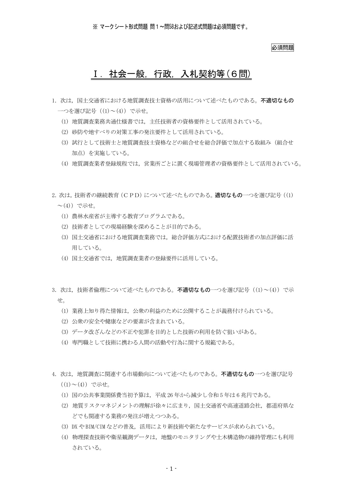
問2
必須
2．次は，技術者の継続教育（ＣＰＤ）について述べたものである。適切なもの一つを選び記号（(1)
～(4)）で示せ。
(1) 農林水産省が主導する教育プログラムである。
(2) 技術者としての現場経験を深めることが目的である。
(3) 国土交通省における地質調査業務では，総合評価方式における配置技術者の加点評価に活
用している。
(4) 国土交通省では，地質調査業者の登録要件に活用している。
図表・イラスト確認用：PDF紙面（2ページ）を表示
問3
必須
3．次は，技術者倫理について述べたものである。不適切なもの一つを選び記号（(1)～(4)）で示
せ。
(1) 業務上知り得た情報は，公衆の利益のために公開することが義務付けられている。
(2) 公衆の安全や健康などの要素が含まれている。
(3) データ改ざんなどの不正や犯罪を目的とした技術の利用を防ぐ狙いがある。
(4) 専門職として技術に携わる人間の活動や行為に関する規範である。
図表・イラスト確認用：PDF紙面（2ページ）を表示
問4
必須
4．次は，地質調査に関連する市場動向について述べたものである。不適切なもの一つを選び記号
（(1)～(4)）で示せ。
(1) 国の公共事業関係費当初予算は，平成26 年から減少し令和5 年は6 兆円である。
(2) 地質リスクマネジメントの理解が徐々に広まり，国土交通省や高速道路会社，都道府県な
どでも関連する業務の発注が増えつつある。
(3) DX やBIM/CIM などの普及，活用により新技術や新たなサービスが求められている。
(4) 物理探査技術や衛星観測データは，地盤のモニタリングや土木構造物の維持管理にも利用
されている。
- 2 -
図表・イラスト確認用：PDF紙面（2ページ）を表示
問5
必須
5．次は，産業廃棄物管理票（マニフェスト）について述べたものである。適切なもの一つを選び
記号（(1)～(4)）で示せ。
(1) 産業廃棄物の処理量を軽減することを目的としている。
(2) 排出事業者が産業廃棄物を自ら処理する場合でも交付は必要である。
(3) 排出事業者は，マニフェストの交付後，定められた期限内に最終処分が終了したことを確
認しなければならない。
(4) 排出事業者は，産業廃棄物の処理が適正に終了した後，マニフェストを市町村に提出しな
ければならない。
図表・イラスト確認用：PDF紙面（3ページ）を表示
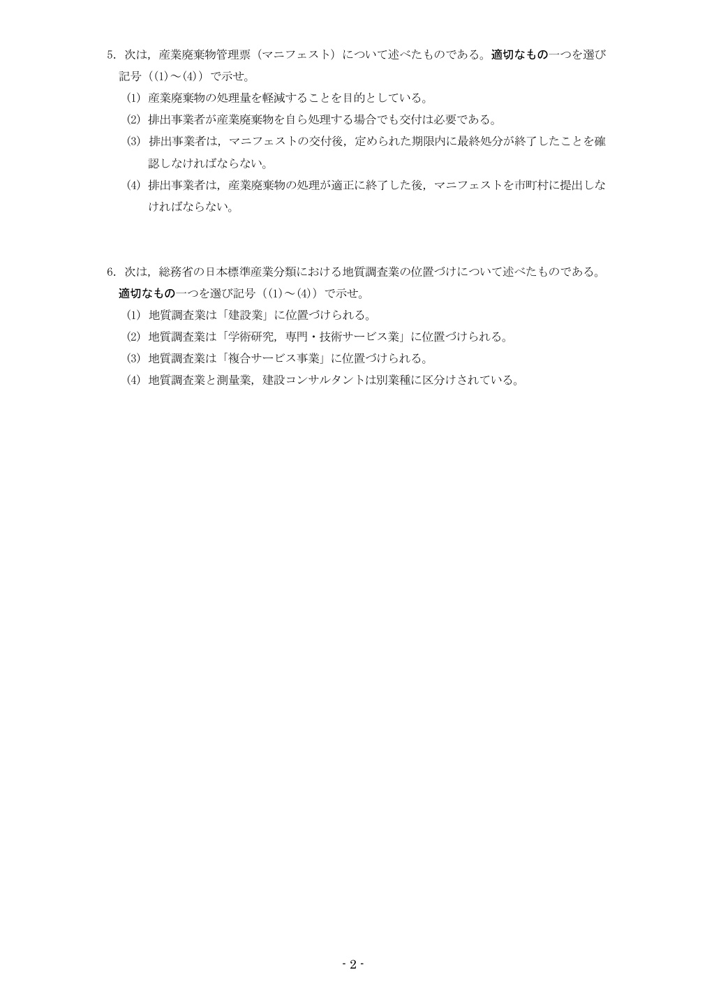
問6
必須
6．次は，総務省の日本標準産業分類における地質調査業の位置づけについて述べたものである。
適切なもの一つを選び記号（(1)～(4)）で示せ。
(1) 地質調査業は「建設業」に位置づけられる。
(2) 地質調査業は「学術研究，専門・技術サービス業」に位置づけられる。
(3) 地質調査業は「複合サービス事業」に位置づけられる。
(4) 地質調査業と測量業，建設コンサルタントは別業種に区分けされている。
- 3 -
必須問題
Ⅱ．地質，測量，土木，建築等の知識(８問)
図表・イラスト確認用：PDF紙面（3ページ）を表示
問7
必須
7．下表は，山地の地形区分を示したものである。表中の空欄 Ａ ～ Ｄ に当てはまる語
句の適切な組合せ一つを選び記号（(1)～(4)）で示せ。
地形区分
微地形
Ａ
三角末端面，河川屈曲，閉塞丘
Ｂ
メサ，ビュート，ケスタ
Ｃ
谷頭，ガリー，氷河地形
Ｄ
溶岩台地，カルデラ，溶岩ドーム
記号
Ａ
Ｂ
Ｃ
Ｄ
(1)
断層地形
組織地形
侵食地形
火山地形
(2)
断層地形
侵食地形
組織地形
火山地形
(3)
組織地形
断層地形
侵食地形
火山地形
(4)
火山地形
断層地形
侵食地形
組織地形
図表・イラスト確認用：PDF紙面（4ページ）を表示
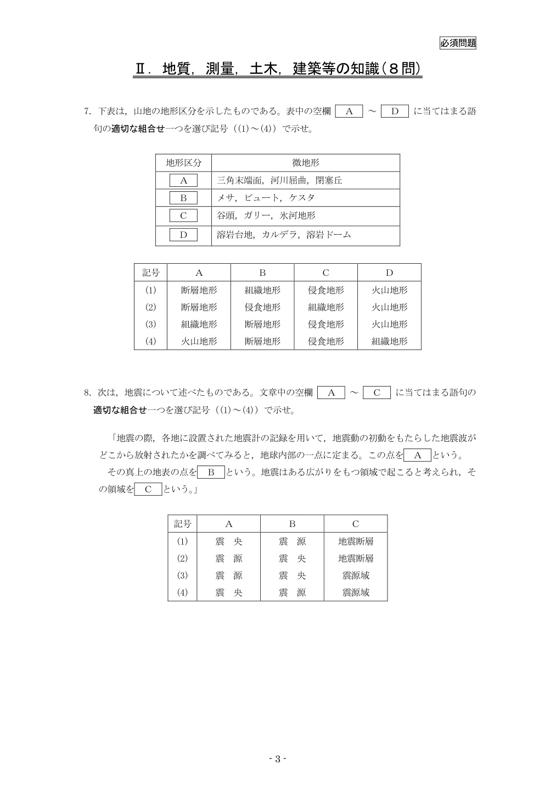
問8
必須
8．次は，地震について述べたものである。文章中の空欄 Ａ ～ Ｃ に当てはまる語句の
適切な組合せ一つを選び記号（(1)～(4)）で示せ。
「地震の際，各地に設置された地震計の記録を用いて，地震動の初動をもたらした地震波が
どこから放射されたかを調べてみると，地球内部の一点に定まる。この点を Ａ という。
その真上の地表の点を Ｂ という。地震はある広がりをもつ領域で起こると考えられ，そ
の領域を Ｃ という。」
記号
Ａ
Ｂ
Ｃ
(1)
(2)
(3)
(4)
震 央
震 源
震 源
震 央
震 源
震 央
震 央
震 源
地震断層
地震断層
震源域
震源域
- 4 -
図表・イラスト確認用：PDF紙面（4ページ）を表示
問9
必須
9．次は，地質時代について述べたものである。不適切なもの一つを選び記号（(1)～(4)）で示せ。
(1) 第四紀は，更新世と完新世に区分される。
(2) 新生代は，古第三紀，新第三紀と第四紀に区分される。
(3) 古第三紀は，古い順から，暁新世，始新世，漸新世に区分される。
(4) 中新世は，新第三紀の最後の世である。
図表・イラスト確認用：PDF紙面（5ページ）を表示
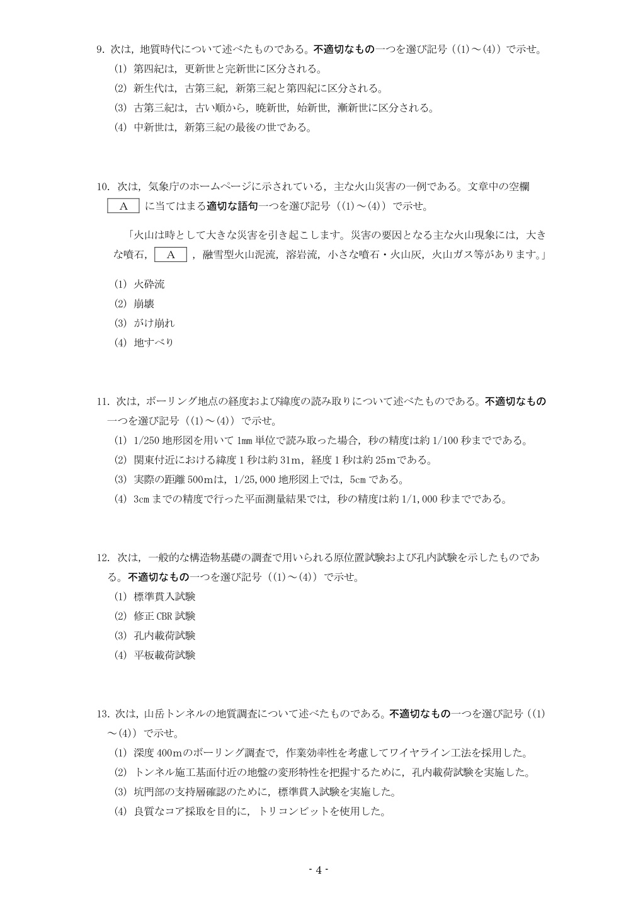
問10
必須
10．次は，気象庁のホームページに示されている，主な火山災害の一例である。文章中の空欄
Ａ に当てはまる適切な語句一つを選び記号（(1)～(4)）で示せ。
「火山は時として大きな災害を引き起こします。災害の要因となる主な火山現象には，大き
な噴石， Ａ ，融雪型火山泥流，溶岩流，小さな噴石・火山灰，火山ガス等があります。」
(1) 火砕流
(2) 崩壊
(3) がけ崩れ
(4) 地すべり
図表・イラスト確認用：PDF紙面（5ページ）を表示
問11
必須
11．次は，ボーリング地点の経度および緯度の読み取りについて述べたものである。不適切なもの
一つを選び記号（(1)～(4)）で示せ。
(1) 1/250 地形図を用いて1mm 単位で読み取った場合，秒の精度は約1/100 秒までである。
(2) 関東付近における緯度1 秒は約31ｍ，経度1 秒は約25ｍである。
(3) 実際の距離500ｍは，1/25,000 地形図上では，5cm である。
(4) 3cm までの精度で行った平面測量結果では，秒の精度は約1/1,000 秒までである。
図表・イラスト確認用：PDF紙面（5ページ）を表示
問12
必須
12．次は，一般的な構造物基礎の調査で用いられる原位置試験および孔内試験を示したものであ
る。不適切なもの一つを選び記号（(1)～(4)）で示せ。
(1) 標準貫入試験
(2) 修正CBR 試験
(3) 孔内載荷試験
(4) 平板載荷試験
図表・イラスト確認用：PDF紙面（5ページ）を表示
問13
必須
13．次は，山岳トンネルの地質調査について述べたものである。不適切なもの一つを選び記号（(1)
～(4)）で示せ。
(1) 深度400ｍのボーリング調査で，作業効率性を考慮してワイヤライン工法を採用した。
(2) トンネル施工基面付近の地盤の変形特性を把握するために，孔内載荷試験を実施した。
(3) 坑門部の支持層確認のために，標準貫入試験を実施した。
(4) 良質なコア採取を目的に，トリコンビットを使用した。
- 5 -
図表・イラスト確認用：PDF紙面（5ページ）を表示
問14
必須
14．下表は，液状化しやすい地盤の特徴を示したものである。適切な組合せ一つを選び記号（(1)
～(4)）で示せ。
記号
土 質
土層分布深度
地下水位
Ｎ 値
(1)
(2)
(3)
(4)
砂質土
砂質土
粘性土
粘性土
GL-20ｍ以深
GL-20ｍ以浅
GL-20ｍ以深
GL-20ｍ以浅
地下水位以浅で不飽和
地下水位以深で飽和
地下水位以深で飽和
地下水位以浅で不飽和
20 程度以上
20 程度以下
20 程度以上
20 程度以下
- 6 -
必須問題
Ⅲ．現場技術の知識(３２問)
図表・イラスト確認用：PDF紙面（6ページ）を表示
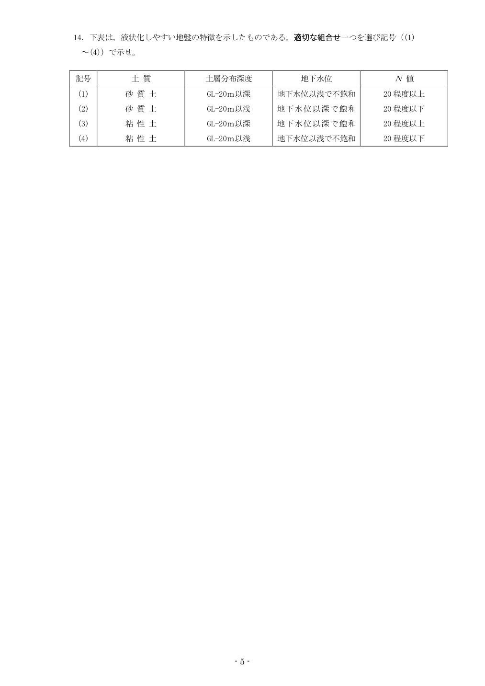
問15
必須
15．次は，スピンドル型油圧フィード式ボーリングマシンの基本構造とその機能について述べたも
のである。 文章中の空欄 Ａ ～ Ｄ に当てはまる語句の適切な組合せ一つを選び記号
（(1)～(4)）で示せ。
スピンドルの中を通したボーリング用ロッドをチャックでグリップし回転と推進力を与えるた
めのスイベルヘッド（ Ａ ），ドリルストリングス（孔内で使われる一連の掘削具の総称）
などを揚降するためのドラム（ Ｂ ），スイベルヘッドとホイストの回転数を変換するトラ
ンスミッション（ Ｃ ），原動機からの動力を伝えるクラッチ，オイルポンプ，油圧バルブ
（ Ｄ ）等で構成される。
記号
Ａ
Ｂ
Ｃ
Ｄ
(1)
(2)
(3)
(4)
巻揚装置
せん孔装置
回転装置
推進装置
伝達装置
巻揚装置
巻揚装置
変速装置
変速装置
変速装置
伝達装置
伝達装置
油圧装置
操作装置
油圧装置
巻揚装置
図表・イラスト確認用：PDF紙面（7ページ）を表示
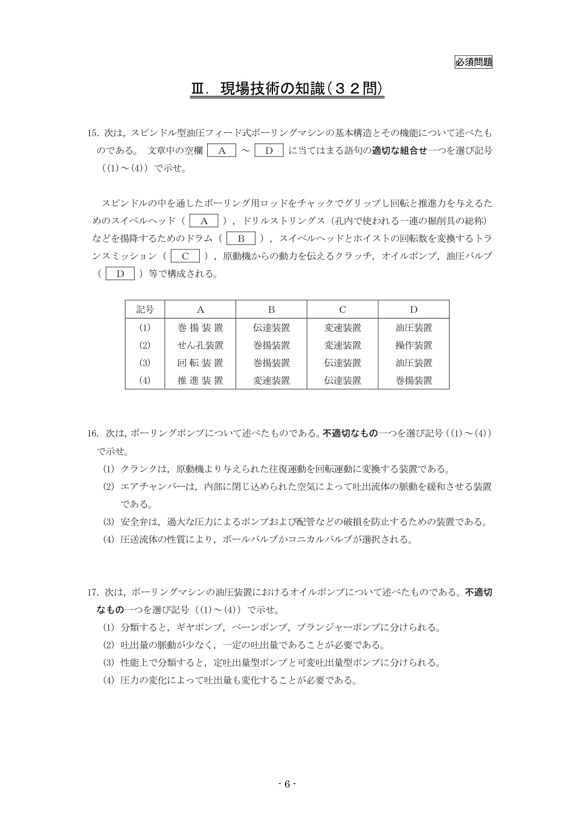
問16
必須
16. 次は，ボーリングポンプについて述べたものである。不適切なもの一つを選び記号（(1)～(4)）
で示せ。
(1) クランクは，原動機より与えられた往復運動を回転運動に変換する装置である。
(2) エアチャンバーは，内部に閉じ込められた空気によって吐出流体の脈動を緩和させる装置
である。
(3) 安全弁は，過大な圧力によるポンプおよび配管などの破損を防止するための装置である。
(4) 圧送流体の性質により，ボールバルブかコニカルバルブが選択される。
図表・イラスト確認用：PDF紙面（7ページ）を表示
問17
必須
17．次は，ボーリングマシンの油圧装置におけるオイルポンプについて述べたものである。不適切
なもの一つを選び記号（(1)～(4)）で示せ。
(1) 分類すると，ギヤポンプ，ベーンポンプ，プランジャーポンプに分けられる。
(2) 吐出量の脈動が少なく，一定の吐出量であることが必要である。
(3) 性能上で分類すると，定吐出量型ポンプと可変吐出量型ポンプに分けられる。
(4) 圧力の変化によって吐出量も変化することが必要である。
- 7 -
図表・イラスト確認用：PDF紙面（7ページ）を表示
問18
必須
18．次は，ボーリングポンプについて述べたものである。文章中の空欄 Ａ ～ Ｄ に当て
はまる語句の適切な組合せ一つを選び記号（(1)～(4)）で示せ。
ボーリングポンプのバルブは，流体を Ａ 方向に通過させ， Ｂ を防ぐ役目をする。バ
ルブは，両側に働く Ｃ によって自動的に開閉される。ボーリングポンプのバルブは， Ｄ で
ある。
記号
Ａ
Ｂ
Ｃ
Ｄ
(1)
(2)
(3)
(4)
一 定
水 平
一 定
水 平
漏 れ
漏 れ
逆 流
逆 流
油 圧
差 圧
差 圧
油 圧
密閉弁
密閉弁
上昇弁
上昇弁
図表・イラスト確認用：PDF紙面（8ページ）を表示
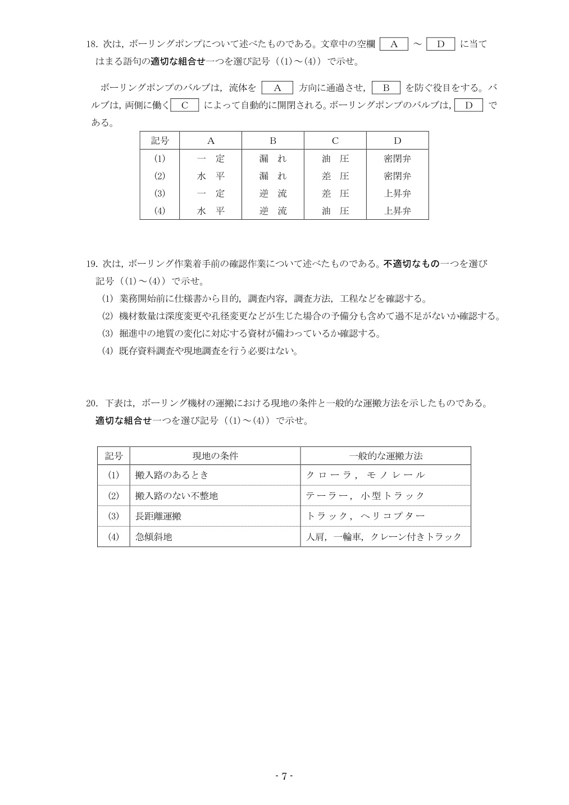
問19
必須
19．次は，ボーリング作業着手前の確認作業について述べたものである。不適切なもの一つを選び
記号（(1)～(4)）で示せ。
(1) 業務開始前に仕様書から目的，調査内容，調査方法，工程などを確認する。
(2) 機材数量は深度変更や孔径変更などが生じた場合の予備分も含めて過不足がないか確認する。
(3) 掘進中の地質の変化に対応する資材が備わっているか確認する。
(4) 既存資料調査や現地調査を行う必要はない。
図表・イラスト確認用：PDF紙面（8ページ）を表示
問20
必須
20．下表は，ボーリング機材の運搬における現地の条件と一般的な運搬方法を示したものである。
適切な組合せ一つを選び記号（(1)～(4)）で示せ。
記号
現地の条件
一般的な運搬方法
(1)
搬入路のあるとき
クローラ，モノレール
(2)
搬入路のない不整地
テーラー，小型トラック
(3)
長距離運搬
トラック，ヘリコプター
(4)
急傾斜地
人肩，一輪車，クレーン付きトラック
- 8 -
図表・イラスト確認用：PDF紙面（8ページ）を表示
問21
必須
21．次は，ボーリング足場の必要性について述べたものである。文章中の空欄 Ａ ～
Ｄ に当てはまる語句の適切な組合せ一つを選び記号((1)～(4))で示せ。
Ａ や水上のボーリングでは Ｂ な用地を求めることが難しいため，足場仮設を行う必要
がある。また， Ｂ 地であっても， Ｃ ボーリング，原位置試験や Ｄ パイプ挿入等の作
業のために足場仮設を行う必要がある。
記号
Ａ
Ｂ
Ｃ
Ｄ
(1)
(2)
(3)
(4)
山
地
市街地
市街地
山
地
硬 質
硬 質
平 坦
平 坦
コ ア
ノンコア
ノンコア
コ ア
足 場
足 場
ケーシング
ケーシング
図表・イラスト確認用：PDF紙面（9ページ）を表示
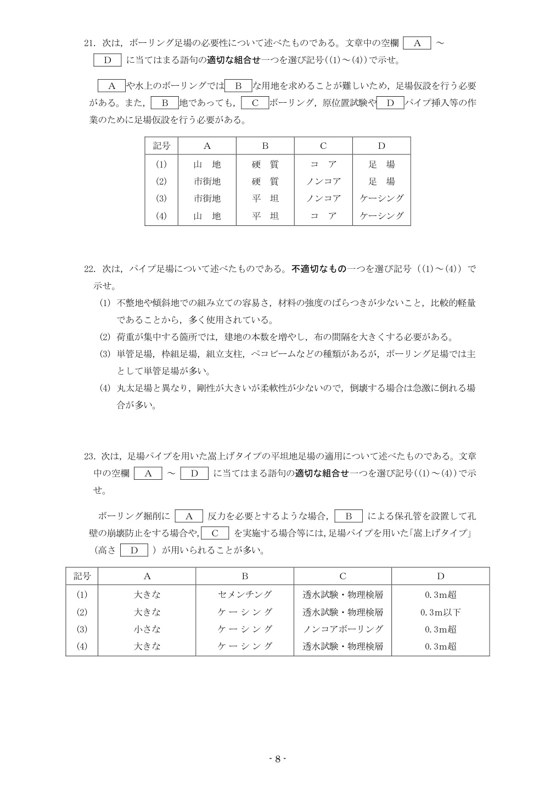
問22
必須
22．次は，パイプ足場について述べたものである。不適切なもの一つを選び記号（(1)～(4)）で
示せ。
(1) 不整地や傾斜地での組み立ての容易さ，材料の強度のばらつきが少ないこと，比較的軽量
であることから，多く使用されている。
(2) 荷重が集中する箇所では，建地の本数を増やし，布の間隔を大きくする必要がある。
(3) 単管足場，枠組足場，組立支柱，ペコビームなどの種類があるが，ボーリング足場では主
として単管足場が多い。
(4) 丸太足場と異なり，剛性が大きいが柔軟性が少ないので，倒壊する場合は急激に倒れる場
合が多い。
図表・イラスト確認用：PDF紙面（9ページ）を表示
問23
必須
23．次は，足場パイプを用いた嵩上げタイプの平坦地足場の適用について述べたものである。文章
中の空欄 Ａ ～ Ｄ に当てはまる語句の適切な組合せ一つを選び記号((1)～(4))で示
せ。
ボーリング掘削に Ａ 反力を必要とするような場合， Ｂ による保孔管を設置して孔
壁の崩壊防止をする場合や， Ｃ を実施する場合等には，足場パイプを用いた「嵩上げタイプ」
（高さ Ｄ ）が用いられることが多い。
記号
Ａ
Ｂ
Ｃ
Ｄ
(1)
(2)
(3)
(4)
大きな
大きな
小さな
大きな
セメンチング
ケーシング
ケーシング
ケーシング
透水試験・物理検層
透水試験・物理検層
ノンコアボーリング
透水試験・物理検層
0.3ｍ超
0.3ｍ以下
0.3ｍ超
0.3ｍ超
- 9 -
図表・イラスト確認用：PDF紙面（9ページ）を表示
問24
必須
24．次は，ボーリングの一般的な掘進方法について述べたものである。不適切なもの一つを選び記
号（(1)～(4)）で示せ。
(1) 掘進速度を上げるため，ビット荷重を増加させた。
(2) 掘進速度を上げるため，ビット回転数を増加させた。
(3) 回転トルクを減少させるため，ビット荷重を増加させた。
(4) メタルビット刃先の食い込みを深くするため，ビット荷重を増加させた。
図表・イラスト確認用：PDF紙面（10ページ）を表示
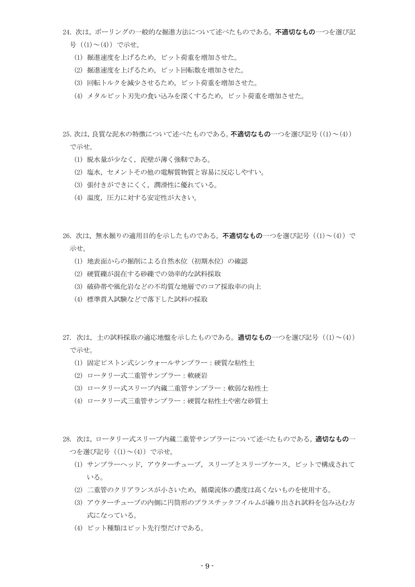
問25
必須
25．次は，良質な泥水の特徴について述べたものである。不適切なもの一つを選び記号（(1)～(4)）
で示せ。
(1) 脱水量が少なく，泥壁が薄く強靭である。
(2) 塩水，セメントその他の電解質物質と容易に反応しやすい。
(3) 張付きができにくく，潤滑性に優れている。
(4) 温度，圧力に対する安定性が大きい。
図表・イラスト確認用：PDF紙面（10ページ）を表示
問26
必須
26．次は，無水掘りの適用目的を示したものである。不適切なもの一つを選び記号（(1)～(4)）で
示せ。
(1) 地表面からの掘削による自然水位（初期水位）の確認
(2) 硬質礫が混在する砂礫での効率的な試料採取
(3) 破砕帯や風化岩などの不均質な地層でのコア採取率の向上
(4) 標準貫入試験などで落下した試料の採取
図表・イラスト確認用：PDF紙面（10ページ）を表示
問27
必須
27. 次は，土の試料採取の適応地盤を示したものである。適切なもの一つを選び記号（（1)～(4））
で示せ。
(1) 固定ピストン式シンウォールサンプラー：硬質な粘性土
(2) ロータリー式二重管サンプラー：軟硬岩
(3) ロータリー式スリーブ内蔵二重管サンプラー：軟弱な粘性土
(4) ロータリー式三重管サンプラー：硬質な粘性土や密な砂質土
図表・イラスト確認用：PDF紙面（10ページ）を表示
問28
必須
28. 次は，ロータリー式スリーブ内蔵二重管サンプラーについて述べたものである。適切なもの一
つを選び記号（（1)～(4））で示せ。
(1) サンプラーヘッド，アウターチューブ，スリーブとスリーブケース，ビットで構成されて
いる。
(2) 二重管のクリアランスが小さいため，循環流体の濃度は高くないものを使用する。
(3) アウターチューブの内側に円筒形のプラスチックフイルムが繰り出され試料を包み込む方
式になっている。
(4) ビット種類はビット先行型だけである。
- 10 -
図表・イラスト確認用：PDF紙面（10ページ）を表示
問29
必須
29．次は，ケーシングの設置について述べたものである。不適切なもの一つを選び記号（（1)～(4））
で示せ。
(1) 挿入前の循環水は抜管を考慮して清水にする。
(2) 挿入ごとに孔径は小さくなり，掘削器具をそのたびに交換しなければならない。
(3) 回収時に孔内放棄を余儀なくされることがある。
(4) 挿入されていると測定不能な検層が多い。
図表・イラスト確認用：PDF紙面（11ページ）を表示
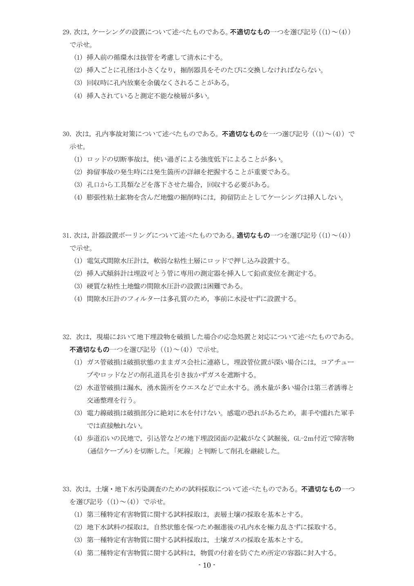
問30
必須
30．次は，孔内事故対策について述べたものである。不適切なものを一つ選び記号（(1)～(4)）で
示せ。
(1) ロッドの切断事故は，使い過ぎによる強度低下によることが多い。
(2) 抑留事故の発生時には発生箇所の詳細を把握することが重要である。
(3) 孔口から工具類などを落下させた場合，回収する必要がある。
(4) 膨張性粘土鉱物を含んだ地盤の掘削時には，抑留防止としてケーシングは挿入しない。
図表・イラスト確認用：PDF紙面（11ページ）を表示
問31
必須
31．次は，計器設置ボーリングについて述べたものである。適切なもの一つを選び記号（(1)～(4)）
で示せ。
(1) 電気式間隙水圧計は，軟弱な粘性土層にロッドで押し込み設置する。
(2) 挿入式傾斜計は埋設可とう管に専用の測定器を挿入して鉛直変位を測定する。
(3) 硬質な粘性土地盤の間隙水圧計の設置は困難である。
(4) 間隙水圧計のフィルターは多孔質のため，事前に水浸せずに設置する。
図表・イラスト確認用：PDF紙面（11ページ）を表示
問32
必須
32．次は，現場において地下埋設物を破損した場合の応急処置と対応について述べたものである。
不適切なもの一つを選び記号（(1)～(4)）で示せ。
(1) ガス管破損は破損状態のままガス会社に連絡し，埋設管位置が深い場合には，コアチュー
ブやロッドなどの削孔道具を引き抜かずガスを遮断する。
(2) 水道管破損は漏水，湧水箇所をウエスなどで止水する。湧水量が多い場合は第三者誘導と
交通整理を行う。
(3) 電力線破損は破損部分に絶対に水を付けない。感電の恐れがあるため，素手や濡れた軍手
では直接触れない。
(4) 歩道沿いの民地で，引込管などの地下埋設図面の記載がなく試掘後，GL-2ｍ付近で障害物
(通信ケーブル)を切断した。「死線」と判断して削孔を継続した。
図表・イラスト確認用：PDF紙面（11ページ）を表示
問33
必須
33．次は，土壌・地下水汚染調査のための試料採取について述べたものである。不適切なもの一つ
を選び記号（（1)～(4））で示せ。
(1) 第三種特定有害物質に関する試料採取は，表層土壌の採取を基本とする。
(2) 地下水試料の採取は，自然状態を保つため掘進後の孔内水を極力乱さずに採取する。
(3) 第一種特定有害物質に関する試料採取は，土壌ガスの採取を基本とする。
(4) 第二種特定有害物質に関する試料は，物質の付着を防ぐため所定の容器に封入する。
- 11 -
図表・イラスト確認用：PDF紙面（11ページ）を表示
問34
必須
34．下図は，サンプラーの構造を示したものである。該当するサンプラーの名称として適切なもの
一つを選び記号（(1)～(4)）で示せ。
(1) 固定ピストン式シンウォールサンプラー
(2) ロータリー式二重管サンプラー
(3) ロータリー式三重管サンプラー
(4) ロータリー式スリーブ内蔵二重管サンプラー
図表・イラスト確認用：PDF紙面（12ページ）を表示
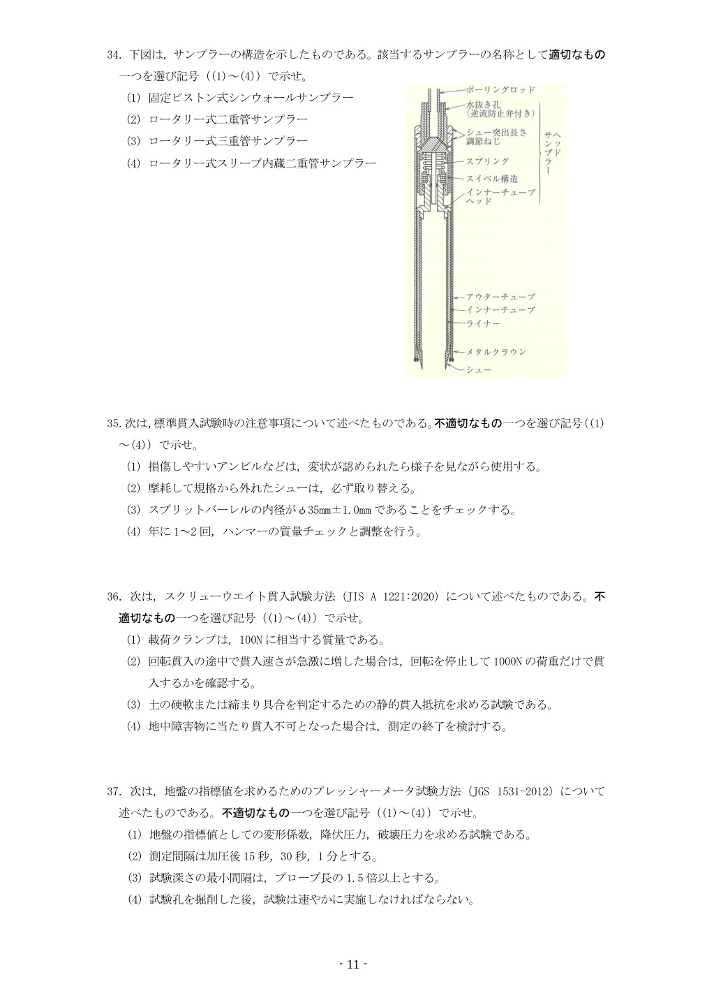
問35
必須
35．次は，標準貫入試験時の注意事項について述べたものである。不適切なもの一つを選び記号（(1)
～(4)）で示せ。
(1) 損傷しやすいアンビルなどは，変状が認められたら様子を見ながら使用する。
(2) 摩耗して規格から外れたシューは，必ず取り替える。
(3) スプリットバーレルの内径がφ35mm±1.0mm であることをチェックする。
(4) 年に1～2 回，ハンマーの質量チェックと調整を行う。
図表・イラスト確認用：PDF紙面（12ページ）を表示
問36
必須
36．次は，スクリューウエイト貫入試験方法（JIS A 1221:2020）について述べたものである。不
適切なもの一つを選び記号（（1)～(4））で示せ。
(1) 載荷クランプは，100N に相当する質量である。
(2) 回転貫入の途中で貫入速さが急激に増した場合は，回転を停止して1000N の荷重だけで貫
入するかを確認する。
(3) 土の硬軟または締まり具合を判定するための静的貫入抵抗を求める試験である。
(4) 地中障害物に当たり貫入不可となった場合は，測定の終了を検討する。
図表・イラスト確認用：PDF紙面（12ページ）を表示
問37
必須
37．次は，地盤の指標値を求めるためのプレッシャーメータ試験方法（JGS 1531-2012）について
述べたものである。不適切なもの一つを選び記号（(1)～(4)）で示せ。
(1) 地盤の指標値としての変形係数，降伏圧力，破壊圧力を求める試験である。
(2) 測定間隔は加圧後15 秒，30 秒，1 分とする。
(3) 試験深さの最小間隔は，プローブ長の1.5 倍以上とする。
(4) 試験孔を掘削した後，試験は速やかに実施しなければならない。
- 12 -
図表・イラスト確認用：PDF紙面（12ページ）を表示
問38
必須
38. 次は，特殊土の主な成因を示したものである。不適切なもの一つを選び記号（(1)～(4)）で示
せ。
(1) ローム：降下火山灰
(2) しらす：火砕流堆積
(3) 泥 炭：泥岩の風化
(4) まさ土：花崗岩の風化
図表・イラスト確認用：PDF紙面（13ページ）を表示
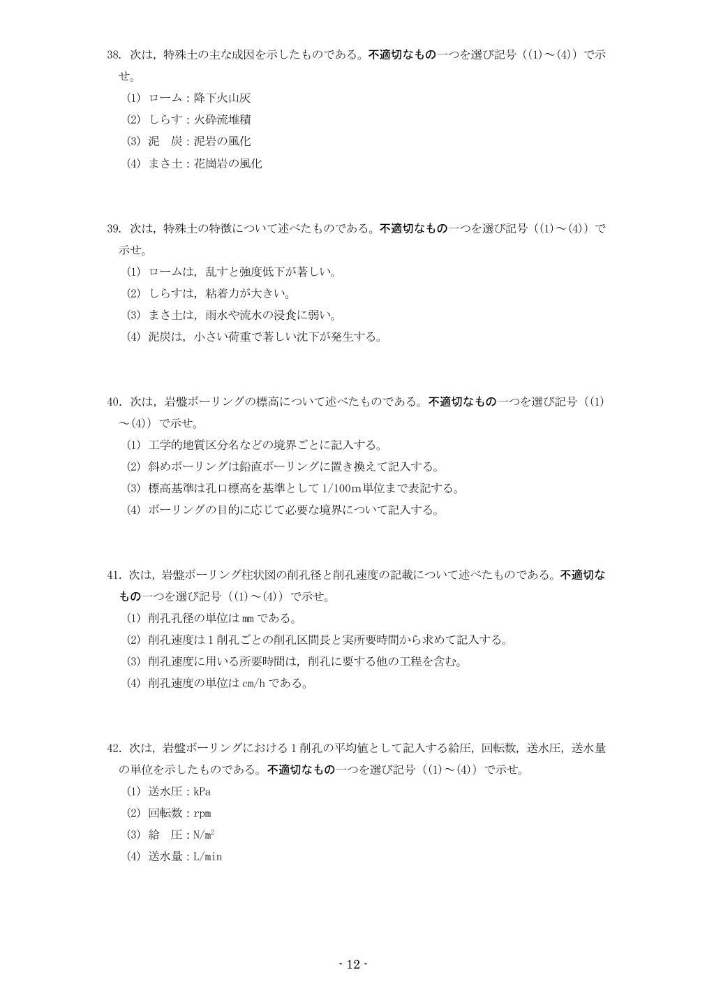
問39
必須
39. 次は，特殊土の特徴について述べたものである。不適切なもの一つを選び記号（(1)～(4)）で
示せ。
(1) ロームは，乱すと強度低下が著しい。
(2) しらすは，粘着力が大きい。
(3) まさ土は，雨水や流水の浸食に弱い。
(4) 泥炭は，小さい荷重で著しい沈下が発生する。
図表・イラスト確認用：PDF紙面（13ページ）を表示
問40
必須
40．次は，岩盤ボーリングの標高について述べたものである。不適切なもの一つを選び記号（(1)
～(4)）で示せ。
(1) 工学的地質区分名などの境界ごとに記入する。
(2) 斜めボーリングは鉛直ボーリングに置き換えて記入する。
(3) 標高基準は孔口標高を基準として1/100ｍ単位まで表記する。
(4) ボーリングの目的に応じて必要な境界について記入する。
図表・イラスト確認用：PDF紙面（13ページ）を表示
問41
必須
41．次は，岩盤ボーリング柱状図の削孔径と削孔速度の記載について述べたものである。不適切な
もの一つを選び記号（(1)～(4)）で示せ。
(1) 削孔孔径の単位はmm である。
(2) 削孔速度は1 削孔ごとの削孔区間長と実所要時間から求めて記入する。
(3) 削孔速度に用いる所要時間は，削孔に要する他の工程を含む。
(4) 削孔速度の単位はcm/h である。
図表・イラスト確認用：PDF紙面（13ページ）を表示
問42
必須
42．次は，岩盤ボーリングにおける1 削孔の平均値として記入する給圧，回転数，送水圧，送水量
の単位を示したものである。不適切なもの一つを選び記号（(1)～(4)）で示せ。
(1) 送水圧：kPa
(2) 回転数：rpm
(3) 給 圧：N/m2
(4) 送水量：L/min
- 13 -
図表・イラスト確認用：PDF紙面（13ページ）を表示
問43
必須
43．次は，ボーリング柱状図の標題欄の記入要領について述べたものである。適切なもの一つを選
び記号（（1)～(4））で示せ。
なお，記入要領は，一般社団法人全国地質調査業協会連合会「ボーリング柱状図作成およびボ
ーリングコア取扱い・保管要領（案）・同解説」(平成27 年6 月)に準じるものとする。
(1) 調査位置は，ボーリング孔口位置の地名を地区名まで記入する。
(2) 調査名は，設計図書に示されている正式な業務名称を省略して記入する。
(3) 最終深度での標準貫入試験による貫入量は，総削孔長に含めない。
(4) 調査期間は業務の履行期間を記入する。
図表・イラスト確認用：PDF紙面（14ページ）を表示
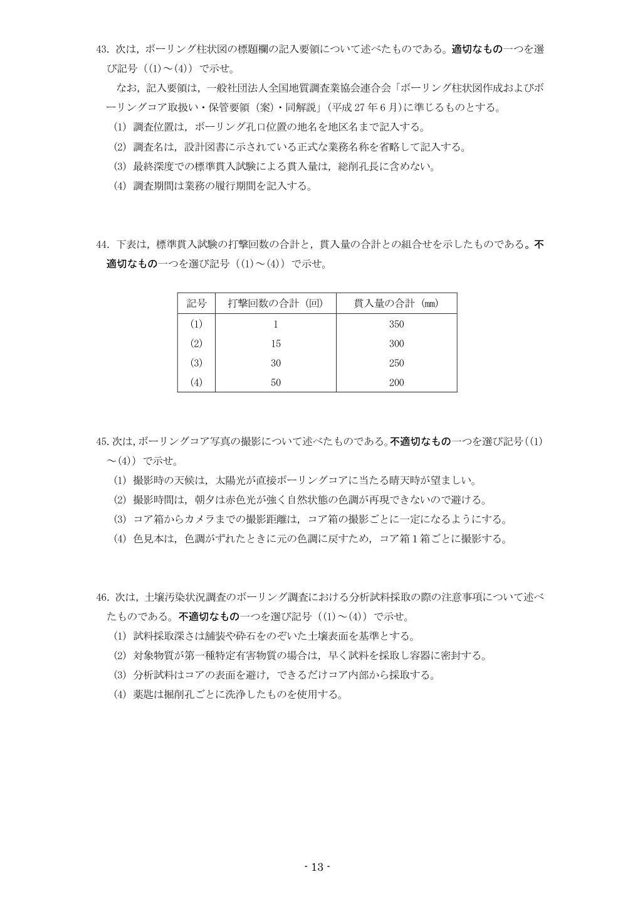
問44
必須
44．下表は，標準貫入試験の打撃回数の合計と，貫入量の合計との組合せを示したものである。不
適切なもの一つを選び記号（(1)～(4)）で示せ。
記号
打撃回数の合計 (回)
貫入量の合計 (mm)
(1)
(2)
(3)
(4)
1
15
30
50
350
300
250
200
図表・イラスト確認用：PDF紙面（14ページ）を表示
問45
必須
45．次は，ボーリングコア写真の撮影について述べたものである。不適切なもの一つを選び記号（(1)
～(4)）で示せ。
(1) 撮影時の天候は，太陽光が直接ボーリングコアに当たる晴天時が望ましい。
(2) 撮影時間は，朝夕は赤色光が強く自然状態の色調が再現できないので避ける。
(3) コア箱からカメラまでの撮影距離は，コア箱の撮影ごとに一定になるようにする。
(4) 色見本は，色調がずれたときに元の色調に戻すため，コア箱１箱ごとに撮影する。
図表・イラスト確認用：PDF紙面（14ページ）を表示
問46
必須
46．次は，土壌汚染状況調査のボーリング調査における分析試料採取の際の注意事項について述べ
たものである。不適切なもの一つを選び記号（(1)～(4)）で示せ。
(1) 試料採取深さは舗装や砕石をのぞいた土壌表面を基準とする。
(2) 対象物質が第一種特定有害物質の場合は，早く試料を採取し容器に密封する。
(3) 分析試料はコアの表面を避け，できるだけコア内部から採取する。
(4) 薬匙は掘削孔ごとに洗浄したものを使用する。
- 14 -
必須問題
Ⅳ．調査技術の理解度(４問)
図表・イラスト確認用：PDF紙面（14ページ）を表示
問47
必須
47．下表は，物理探査手法と適用対象の組合せを示したものである。適切な組合せ一つを選び記号
（(1)～(4)）で示せ。
記号
物理探査手法
適用対象
(1)
電気探査
地下水調査
(2)
弾性波探査
不発弾調査
(3)
音波探査
地盤種別判定
(4)
磁気探査
空洞調査
図表・イラスト確認用：PDF紙面（15ページ）を表示
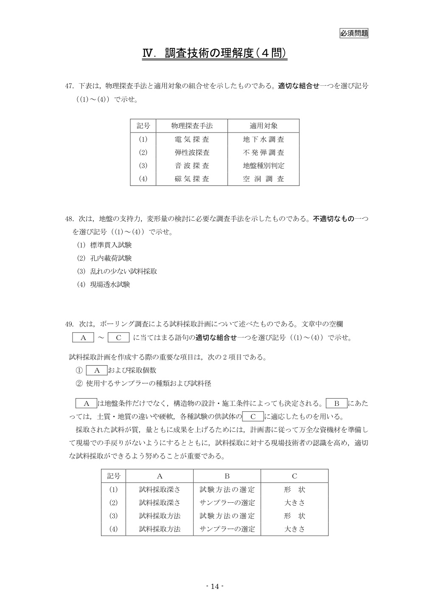
問48
必須
48．次は，地盤の支持力，変形量の検討に必要な調査手法を示したものである。不適切なもの一つ
を選び記号（(1)～(4)）で示せ。
(1) 標準貫入試験
(2) 孔内載荷試験
(3) 乱れの少ない試料採取
(4) 現場透水試験
図表・イラスト確認用：PDF紙面（15ページ）を表示
問49
必須
49. 次は，ボーリング調査による試料採取計画について述べたものである。文章中の空欄
Ａ ～ Ｃ に当てはまる語句の適切な組合せ一つを選び記号（(1)～(4)）で示せ。
試料採取計画を作成する際の重要な項目は，次の2 項目である。
① Ａ および採取個数
② 使用するサンプラーの種類および試料径
Ａ は地盤条件だけでなく，構造物の設計・施工条件によっても決定される。 Ｂ にあた
っては，土質・地質の違いや硬軟，各種試験の供試体の Ｃ に適応したものを用いる。
採取された試料が質，量ともに成果を上げるためには，計画書に従って万全な資機材を準備し
て現場での手戻りがないようにするとともに，試料採取に対する現場技術者の認識を高め，適切
な試料採取ができるよう努めることが重要である。
記号
Ａ
Ｂ
Ｃ
(1)
試料採取深さ
試験方法の選定
形
状
(2)
試料採取深さ
サンプラーの選定
大きさ
(3)
試料採取方法
試験方法の選定
形
状
(4)
試料採取方法
サンプラーの選定
大きさ
- 15 -
図表・イラスト確認用：PDF紙面（15ページ）を表示
問50
必須
50.次は，調査ボーリングの品質向上のための基本事項について述べたものである。不適切なもの
一つを選び記号（(1)～(4)）で示せ。
(1) 過度な送水圧はマッドケーキとして孔壁に不透水膜を厚く形成する他，孔壁・孔底を乱す
場合があるため，十分な孔内洗浄によりマッドケーキを取り除く必要がある。
(2) コアチューブ類の挿入や引き上げは，孔内の泥水位を急激に変化させないようにゆっくり
と行う。
(3) 孔内の泥水位が低下したときは，直ちにコアチューブ類を引き上げ，孔壁の崩壊を防止する。
(4) 掘進を急ぐあまり，ビット荷重の掛けすぎや回転速度を上げすぎると，孔曲がりや孔壁崩
壊の原因になるとともに，カッティングスの排除が不十分となるため注意する。
- 16 -
必須問題
Ⅴ．管理技法(８問)
図表・イラスト確認用：PDF紙面（16ページ）を表示
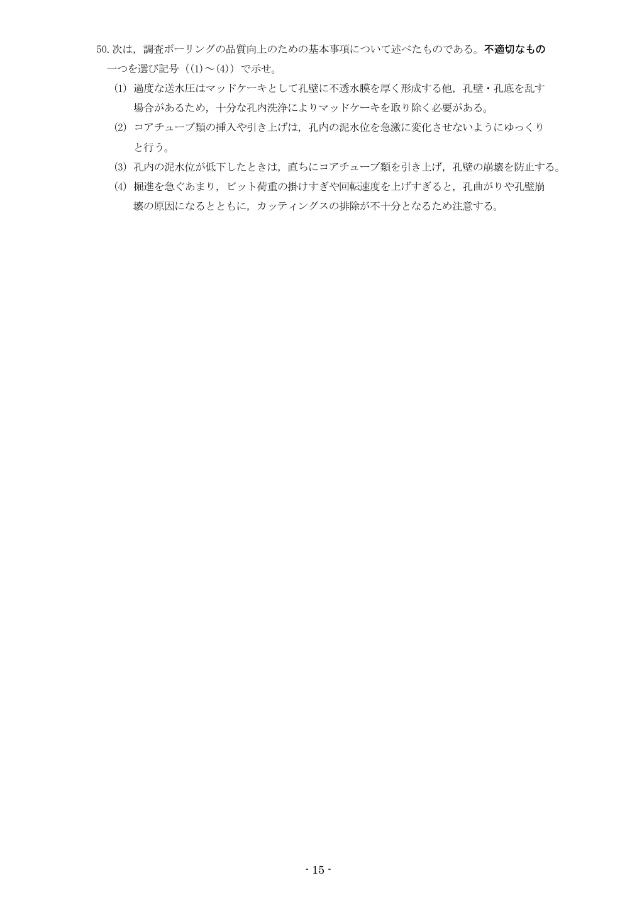
問51
必須
51．次は，労働安全衛生法により作業主任者の選任が必要な作業を示したものである。不適切なも
の一つを選び記号（（1)～(4））で示せ。
(1) 機械集材装置または索道の組立，解体，変更，修理および運転の作業
(2) 高圧室内作業（大気圧を超える気圧下の作業）
(3) 高さが2ｍ以上の足場の組立，解体または変更の作業
(4) 酸素欠乏危険箇所における作業
図表・イラスト確認用：PDF紙面（17ページ）を表示
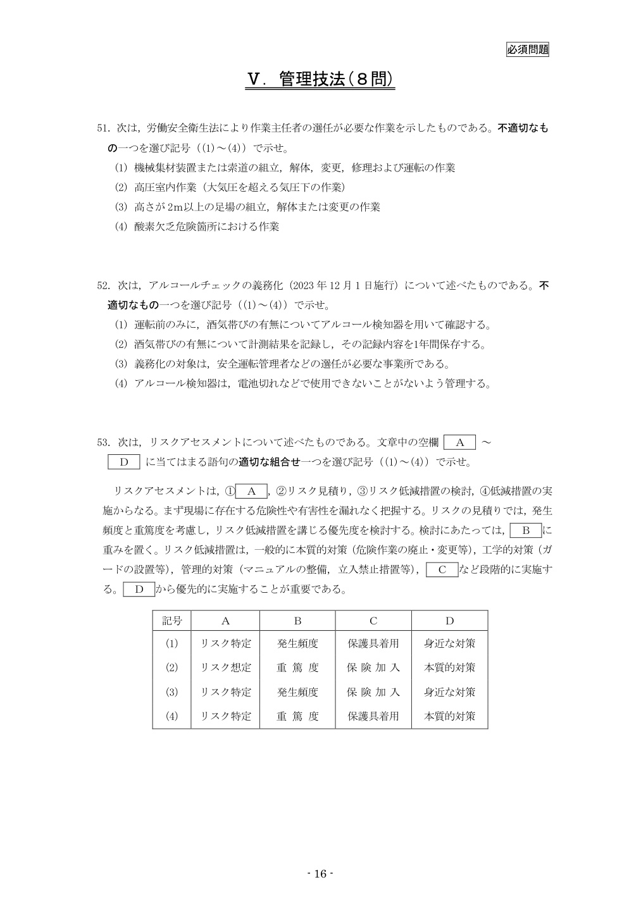
問52
必須
52．次は，アルコールチェックの義務化（2023 年12 月1 日施行）について述べたものである。不
適切なもの一つを選び記号（（1)～(4））で示せ。
(1) 運転前のみに，酒気帯びの有無についてアルコール検知器を用いて確認する。
(2) 酒気帯びの有無について計測結果を記録し，その記録内容を1年間保存する。
(3) 義務化の対象は，安全運転管理者などの選任が必要な事業所である。
(4) アルコール検知器は，電池切れなどで使用できないことがないよう管理する。
図表・イラスト確認用：PDF紙面（17ページ）を表示
問53
必須
53．次は，リスクアセスメントについて述べたものである。文章中の空欄 Ａ ～
Ｄ に当てはまる語句の適切な組合せ一つを選び記号（（1)～(4））で示せ。
リスクアセスメントは，① Ａ ，②リスク見積り，③リスク低減措置の検討，④低減措置の実
施からなる。まず現場に存在する危険性や有害性を漏れなく把握する。リスクの見積りでは，発生
頻度と重篤度を考慮し，リスク低減措置を講じる優先度を検討する。検討にあたっては， Ｂ に
重みを置く。リスク低減措置は，一般的に本質的対策（危険作業の廃止・変更等），工学的対策（ガ
ードの設置等），管理的対策（マニュアルの整備，立入禁止措置等）， Ｃ など段階的に実施す
る。 Ｄ から優先的に実施することが重要である。
記号
Ａ
Ｂ
Ｃ
Ｄ
（1）
リスク特定
発生頻度
保護具着用
身近な対策
（2）
リスク想定
重篤度
保険加入
本質的対策
（3）
リスク特定
発生頻度
保険加入
身近な対策
（4）
リスク特定
重篤度
保護具着用
本質的対策
- 17 -
図表・イラスト確認用：PDF紙面（17ページ）を表示
問54
必須
54．次は，土壌汚染調査時の安全対策について述べたものである。不適切なもの一つを選び記号（（1)
～(4））で示せ。
(1) ピット内など酸素欠乏の危険性がある環境では，酸素濃度を測定する。
(2) 廃棄物処分場など有害ガス吸入の危険性がある環境では，有害ガス濃度を測定する。
(3) 給油所など可燃性ガスの発生が懸念される環境では，防爆構造の資機材を使用する。
(4) 閉鎖空間など有害ガスの滞留が懸念される環境では，防じんマスクを着用する。
図表・イラスト確認用：PDF紙面（18ページ）を表示
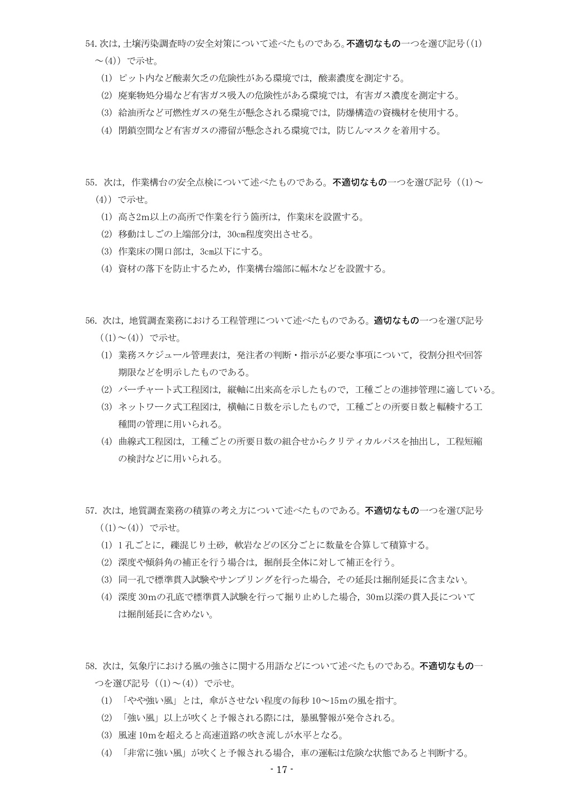
問55
必須
55．次は，作業構台の安全点検について述べたものである。不適切なもの一つを選び記号（（1)～
(4））で示せ。
(1) 高さ2ｍ以上の高所で作業を行う箇所は，作業床を設置する。
(2) 移動はしごの上端部分は，30cm程度突出させる。
(3) 作業床の開口部は，3cm以下にする。
(4) 資材の落下を防止するため，作業構台端部に幅木などを設置する。
図表・イラスト確認用：PDF紙面（18ページ）を表示
問56
必須
56．次は，地質調査業務における工程管理について述べたものである。適切なもの一つを選び記号
（（1)～(4））で示せ。
(1) 業務スケジュール管理表は，発注者の判断・指示が必要な事項について，役割分担や回答
期限などを明示したものである。
(2) バーチャート式工程図は，縦軸に出来高を示したもので，工種ごとの進捗管理に適している。
(3) ネットワーク式工程図は，横軸に日数を示したもので，工種ごとの所要日数と輻輳する工
種間の管理に用いられる。
(4) 曲線式工程図は，工種ごとの所要日数の組合せからクリティカルパスを抽出し，工程短縮
の検討などに用いられる。
図表・イラスト確認用：PDF紙面（18ページ）を表示
問57
必須
57．次は，地質調査業務の積算の考え方について述べたものである。不適切なもの一つを選び記号
（（1)～(4））で示せ。
(1) 1 孔ごとに，礫混じり土砂，軟岩などの区分ごとに数量を合算して積算する。
(2) 深度や傾斜角の補正を行う場合は，掘削長全体に対して補正を行う。
(3) 同一孔で標準貫入試験やサンプリングを行った場合，その延長は掘削延長に含まない。
(4) 深度30ｍの孔底で標準貫入試験を行って掘り止めした場合，30ｍ以深の貫入長について
は掘削延長に含めない。
図表・イラスト確認用：PDF紙面（18ページ）を表示
問58
必須
58．次は，気象庁における風の強さに関する用語などについて述べたものである。不適切なもの一
つを選び記号（（1)～(4））で示せ。
(1) 「やや強い風」とは，傘がさせない程度の毎秒10～15ｍの風を指す。
(2) 「強い風」以上が吹くと予報される際には，暴風警報が発令される。
(3) 風速10ｍを超えると高速道路の吹き流しが水平となる。
(4) 「非常に強い風」が吹くと予報される場合，車の運転は危険な状態であると判断する。
- 18 -
選択問題
Ⅵ．選 択 問 題
問59から問102は，選択問題である。
以下のＡ群またはＢ群のいずれか一方を任意選択の上，解答すること。
選択問題Ａ群： 22 問（主に土質に関連した分野；問59～問80）
選択問題Ｂ群： 22 問（主に岩盤に関連した分野；問81～問102）
※Ａ群，Ｂ群の選択は，受験願書で選択記載した主な調査対象「土質」，「岩盤」のい
ずれかに関わらず，任意で選択することができる。
※Ａ群およびＢ群の両方を解答している場合，選択問題の採点は行わない。
解答用紙への記入の際は，注意して記入すること。
- 19 -
選択問題 Ａ群
選択問題Ａ群：22問（主に土質に関連した分野；問59～問80）
図表・イラスト確認用：PDF紙面（18ページ）を表示
問59
A群（土質）
59．次は，コアバレルについて述べたものである。不適切なもの一つを選び記号（(1)～(4)）で示
せ。
(1) 打込み式貫入サンプラーは無水で使用可能で，打撃，バイブレーションなどの削孔でコア
の採取ができる。
(2) ワイヤラインコアバレルは，ロッドの揚降回数が増加するので，浅掘りのコアボーリング
には合理的な工法である。
(3) シングルコアバレルは，一般に均質な地質で，コアの採取が容易な場合に用いられる。
(4) ダブルコアバレルは，コア採取率を上げるために使用する二重管式のコアバレルである。
図表・イラスト確認用：PDF紙面（20ページ）を表示
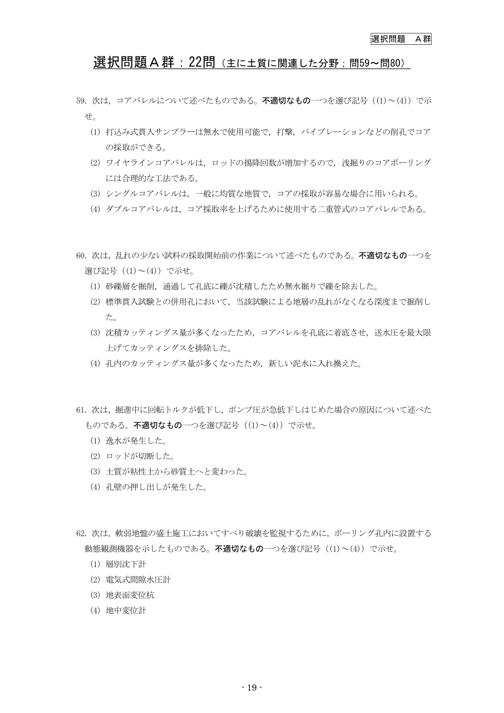
問60
A群（土質）
60．次は，乱れの少ない試料の採取開始前の作業について述べたものである。不適切なもの一つを
選び記号（(1)～(4)）で示せ。
(1) 砂礫層を掘削，通過して孔底に礫が沈積したため無水掘りで礫を除去した。
(2) 標準貫入試験との併用孔において，当該試験による地層の乱れがなくなる深度まで掘削し
た。
(3) 沈積カッティングス量が多くなったため，コアバレルを孔底に着底させ，送水圧を最大限
上げてカッティングスを排除した。
(4) 孔内のカッティングス量が多くなったため，新しい泥水に入れ換えた。
図表・イラスト確認用：PDF紙面（20ページ）を表示
問61
A群（土質）
61．次は，掘進中に回転トルクが低下し，ポンプ圧が急低下しはじめた場合の原因について述べた
ものである。不適切なもの一つを選び記号（(1)～(4)）で示せ。
(1) 逸水が発生した。
(2) ロッドが切断した。
(3) 土質が粘性土から砂質土へと変わった。
(4) 孔壁の押し出しが発生した。
図表・イラスト確認用：PDF紙面（20ページ）を表示
問62
A群（土質）
62．次は，軟弱地盤の盛土施工においてすべり破壊を監視するために，ボーリング孔内に設置する
動態観測機器を示したものである。不適切なもの一つを選び記号（(1)～(4)）で示せ。
(1) 層別沈下計
(2) 電気式間隙水圧計
(3) 地表面変位杭
(4) 地中変位計
- 20 -
選択問題 Ａ群
図表・イラスト確認用：PDF紙面（20ページ）を表示
問63
A群（土質）
63．次は，ボーリング孔の埋戻しについて述べたものである。不適切なもの一つを選び記号（(1)
～(4)）で示せ。
(1) 泥水ポンプはロッドを孔底近くまで降ろしてから，セメントミルクを注入し，孔口から出
てくるのを確認して止める。
(2) ボーリング孔の埋め戻し材料は，規格・基準によりセメントと定められているため，現地
発生土や市販の砂および砂利を使用してはならない。
(3) セメントスラリーを用いる場合は孔内体積の3 割増し程度を注入する必要がある。
(4) 埋戻しは掘削前の状態に復旧する目的で行う。
図表・イラスト確認用：PDF紙面（21ページ）を表示
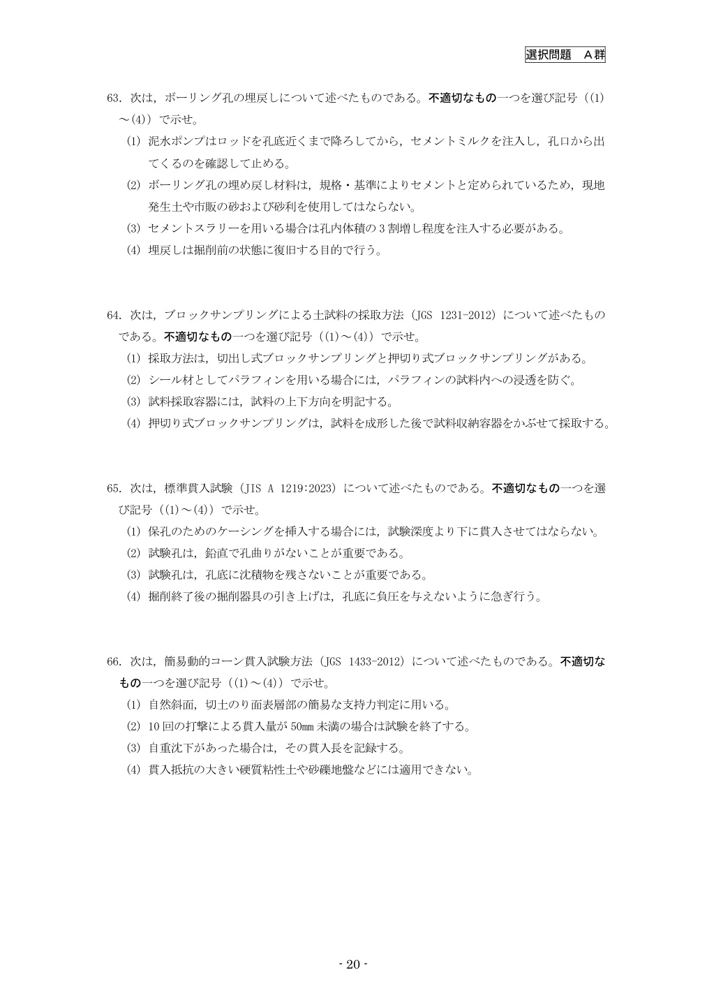
問64
A群（土質）
64．次は，ブロックサンプリングによる土試料の採取方法（JGS 1231-2012）について述べたもの
である。不適切なもの一つを選び記号（（1)～(4））で示せ。
(1) 採取方法は，切出し式ブロックサンプリングと押切り式ブロックサンプリングがある。
(2) シール材としてパラフィンを用いる場合には，パラフィンの試料内への浸透を防ぐ。
(3) 試料採取容器には，試料の上下方向を明記する。
(4) 押切り式ブロックサンプリングは，試料を成形した後で試料収納容器をかぶせて採取する。
図表・イラスト確認用：PDF紙面（21ページ）を表示
問65
A群（土質）
65．次は，標準貫入試験（JIS A 1219:2023）について述べたものである。不適切なもの一つを選
び記号（（1)～(4））で示せ。
(1) 保孔のためのケーシングを挿入する場合には，試験深度より下に貫入させてはならない。
(2) 試験孔は，鉛直で孔曲りがないことが重要である。
(3) 試験孔は，孔底に沈積物を残さないことが重要である。
(4) 掘削終了後の掘削器具の引き上げは，孔底に負圧を与えないように急ぎ行う。
図表・イラスト確認用：PDF紙面（21ページ）を表示
問66
A群（土質）
66．次は，簡易動的コーン貫入試験方法（JGS 1433-2012）について述べたものである。不適切な
もの一つを選び記号（（1)～(4））で示せ。
(1) 自然斜面，切土のり面表層部の簡易な支持力判定に用いる。
(2) 10 回の打撃による貫入量が50mm 未満の場合は試験を終了する。
(3) 自重沈下があった場合は，その貫入長を記録する。
(4) 貫入抵抗の大きい硬質粘性土や砂礫地盤などには適用できない。
- 21 -
選択問題 Ａ群
図表・イラスト確認用：PDF紙面（21ページ）を表示
問67
A群（土質）
67．次は，ポータブルコーン貫入試験方法（JGS 1431-2012）について述べたものである。不適切
なもの一つを選び記号（(1)～(4)）で示せ。
(1) 粘性土や腐植土などの軟弱地盤に人力でコーンを静的に貫入させることによって，コーン
貫入抵抗を求める試験である。
(2) 単管式は，ロッドの周面摩擦の影響を受けるため,適用深さは10ｍ程度である。
(3) 貫入速度は10mm/s を標準とし,測定間隔100mm で加重計の読み値を記録する。
(4) コーン貫入抵抗qc は，一軸圧縮強さの推定に用いられる。
図表・イラスト確認用：PDF紙面（22ページ）を表示
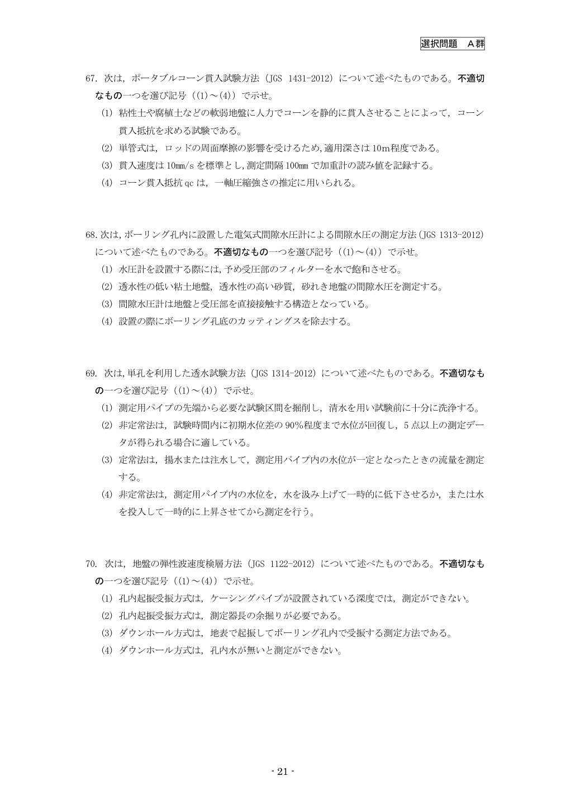
問68
A群（土質）
68．次は，ボーリング孔内に設置した電気式間隙水圧計による間隙水圧の測定方法（JGS 1313-2012）
について述べたものである。不適切なもの一つを選び記号（(1)～(4)）で示せ。
(1) 水圧計を設置する際には,予め受圧部のフィルターを水で飽和させる。
(2) 透水性の低い粘土地盤，透水性の高い砂質，砂れき地盤の間隙水圧を測定する。
(3) 間隙水圧計は地盤と受圧部を直接接触する構造となっている。
(4) 設置の際にボーリング孔底のカッティングスを除去する。
図表・イラスト確認用：PDF紙面（22ページ）を表示
問69
A群（土質）
69. 次は,単孔を利用した透水試験方法（JGS 1314-2012）について述べたものである。不適切なも
の一つを選び記号（(1)～(4)）で示せ。
(1) 測定用パイプの先端から必要な試験区間を掘削し，清水を用い試験前に十分に洗浄する。
(2) 非定常法は，試験時間内に初期水位差の90％程度まで水位が回復し，5 点以上の測定デー
タが得られる場合に適している。
(3) 定常法は，揚水または注水して，測定用パイプ内の水位が一定となったときの流量を測定
する。
(4) 非定常法は，測定用パイプ内の水位を，水を汲み上げて一時的に低下させるか，または水
を投入して一時的に上昇させてから測定を行う。
図表・イラスト確認用：PDF紙面（22ページ）を表示
問70
A群（土質）
70. 次は，地盤の弾性波速度検層方法（JGS 1122-2012）について述べたものである。不適切なも
の一つを選び記号（(1)～(4)）で示せ。
(1) 孔内起振受振方式は，ケーシングパイプが設置されている深度では，測定ができない。
(2) 孔内起振受振方式は，測定器長の余掘りが必要である。
(3) ダウンホール方式は，地表で起振してボーリング孔内で受振する測定方法である。
(4) ダウンホール方式は，孔内水が無いと測定ができない。
- 22 -
0
10
20
30
40
50
60
70
80
90
100
0.001
0.01
0.1
1
10
100
粒 径(mm)
通過質量百分率（％）
選択問題 Ａ群
図表・イラスト確認用：PDF紙面（22ページ）を表示
問71
A群（土質）
71. 下図は，ある土の粒径加積曲線を示したものである。割合が多い粒径区分の呼び名として適切
なもの一つを選び記号（(1)～(4)）で示せ。
(1) 砂
(2) シルト
(3) 粘土
(4) 礫
図表・イラスト確認用：PDF紙面（23ページ）を表示
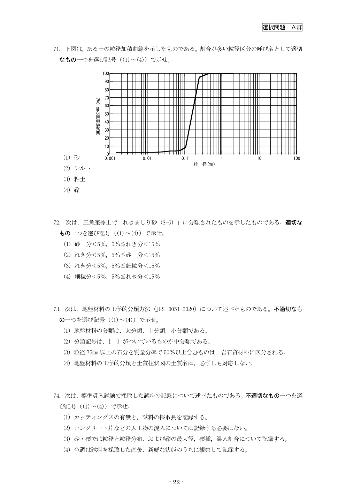
問72
A群（土質）
72. 次は，三角座標上で「れきまじり砂（S-G）」に分類されたものを示したものである。適切な
もの一つを選び記号（(1)～(4)）で示せ。
(1) 砂 分＜5％，5％≦れき分＜15％
(2) れき分＜5％，5％≦砂 分＜15％
(3) れき分＜5％，5％≦細粒分＜15％
(4) 細粒分＜5％，5％≦れき分＜15％
図表・イラスト確認用：PDF紙面（23ページ）を表示
問73
A群（土質）
73．次は，地盤材料の工学的分類方法（JGS 0051-2020）について述べたものである。不適切なも
の一つを選び記号（(1)～(4)）で示せ。
(1) 地盤材料の分類は，大分類，中分類，小分類である。
(2) 分類記号は，〔 〕がついているものが中分類である。
(3) 粒径75mm 以上の石分を質量分率で50％以上含むものは，岩石質材料に区分される。
(4) 地盤材料の工学的分類と土質柱状図の土質名は，必ずしも対応しない。
図表・イラスト確認用：PDF紙面（23ページ）を表示
問74
A群（土質）
74. 次は，標準貫入試験で採取した試料の記録について述べたものである。不適切なもの一つを選
び記号（(1)～(4)）で示せ。
(1) カッティングスの有無と，試料の採取長を記録する。
(2) コンクリート片などの人工物の混入については記録する必要はない。
(3) 砂・礫では粒径と粒径分布，および礫の最大径，礫種，混入割合について記録する。
(4) 色調は試料を採取した直後，新鮮な状態のうちに観察して記録する。
- 23 -
選択問題 Ａ群
図表・イラスト確認用：PDF紙面（23ページ）を表示
問75
A群（土質）
75．下図は，堆積構造を示したものである。空欄 Ａ ～ Ｄ に当てはまる語句の適切な組
合せ一つを選び記号（(1)～(4)）で示せ。
Ａ Ｂ Ｃ Ｄ
記号
Ａ
Ｂ
Ｃ
Ｄ
(1)
(2)
(3)
(4)
レンズ状
ブロック状
レンズ状
ブロック状
薄層状
薄層状
互層状
互層状
ブロック状
シーム状
ポケット状
レンズ状
互層状
互層状
薄層状
薄層状
図表・イラスト確認用：PDF紙面（24ページ）を表示
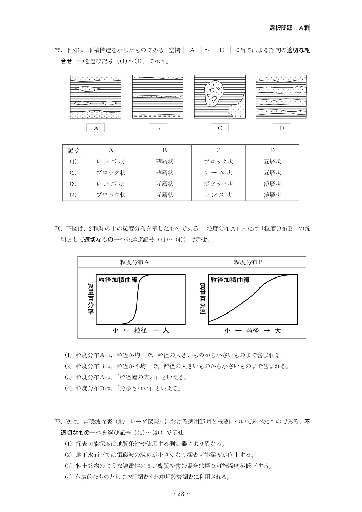
問76
A群（土質）
76．下図は，2 種類の土の粒度分布を示したものである。「粒度分布Ａ」または「粒度分布Ｂ」の説
明として適切なもの一つを選び記号（(1)～(4)）で示せ。
粒度分布Ａ
粒度分布Ｂ
(1) 粒度分布Ａは，粒径が均一で，粒径の大きいものから小さいものまで含まれる。
(2) 粒度分布Ｂは，粒径が不均一で，粒径の大きいものから小さいものまで含まれる。
(3) 粒度分布Ａは，「粒径幅の広い」といえる。
(4) 粒度分布Ｂは，「分級された」といえる。
図表・イラスト確認用：PDF紙面（24ページ）を表示
問77
A群（土質）
77．次は，電磁波探査（地中レーダ探査）における適用範囲と概要について述べたものである。不
適切なもの一つを選び記号（(1)～(4)）で示せ。
(1) 探査可能深度は地質条件や使用する測定器により異なる。
(2) 地下水面下では電磁波の減衰が小さくなり探査可能深度が向上する。
(3) 粘土鉱物のような導電性の高い媒質を含む場合は探査可能深度が低下する。
(4) 代表的なものとして空洞調査や地中埋設管調査に利用される。
粒径加積曲線
小←粒径→大
質
量
百
分
率
粒径加積曲線
小←粒径→大
質
量
百
分
率
- 24 -
選択問題 Ａ群
図表・イラスト確認用：PDF紙面（24ページ）を表示
問78
A群（土質）
78．次は，孔内載荷試験から求められる変形係数（ヤング率）の適用と解釈について述べたもので
ある。不適切なもの一つを選び記号（(1)～(4)）で示せ。
(1) 孔内載荷試験から求まる変形係数は，地盤材料にかかわらず三軸圧縮試験や一軸圧縮試験
から求められる変形係数と概ね一致する。
(2) 孔内載荷試験より求められる変形係数のひずみレベルは非常に小さく，解析や設計の際は
対象とするひずみレベルに留意が必要である。
(3) 変形係数は，一般に孔壁の乱れの影響を強く受けるため，実地盤の変形係数より過少に評
価される場合がある。
(4) 変形係数は，主に水平方向の地盤反力係数の算出に利用される他，基礎の支持力や沈下量の
推定に用いることがある。
図表・イラスト確認用：PDF紙面（25ページ）を表示
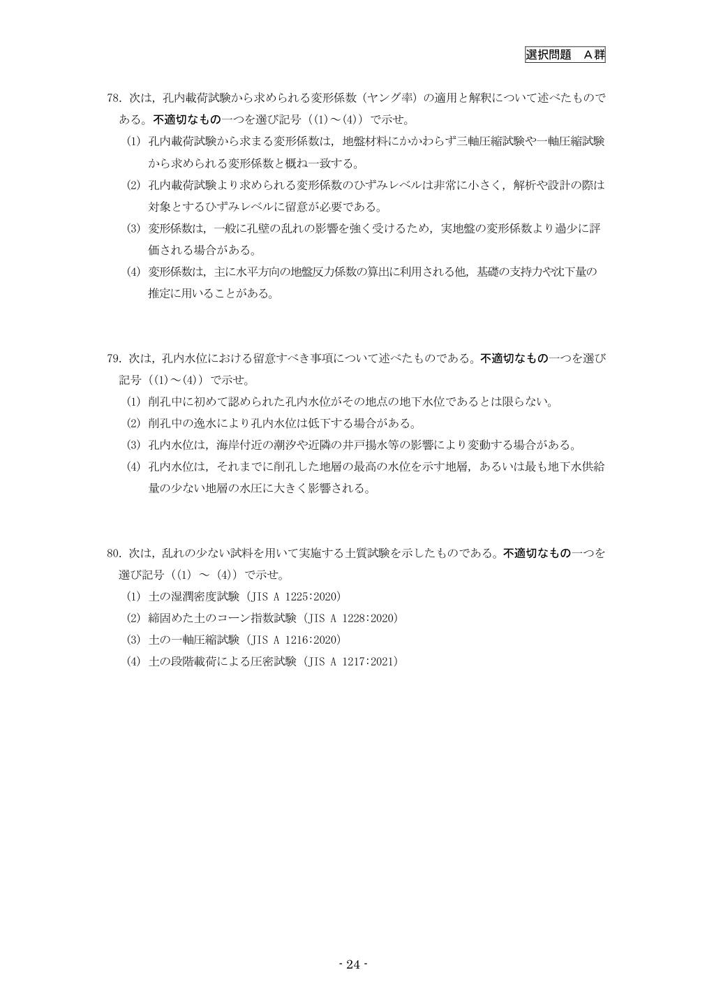
問79
A群（土質）
79．次は，孔内水位における留意すべき事項について述べたものである。不適切なもの一つを選び
記号（(1)～(4)）で示せ。
(1) 削孔中に初めて認められた孔内水位がその地点の地下水位であるとは限らない。
(2) 削孔中の逸水により孔内水位は低下する場合がある。
(3) 孔内水位は，海岸付近の潮汐や近隣の井戸揚水等の影響により変動する場合がある。
(4) 孔内水位は，それまでに削孔した地層の最高の水位を示す地層，あるいは最も地下水供給
量の少ない地層の水圧に大きく影響される。
図表・イラスト確認用：PDF紙面（25ページ）を表示
問80
A群（土質）
80．次は，乱れの少ない試料を用いて実施する土質試験を示したものである。不適切なもの一つを
選び記号（（1）～（4））で示せ。
(1) 土の湿潤密度試験（JIS A 1225:2020）
(2) 締固めた土のコーン指数試験（JIS A 1228:2020）
(3) 土の一軸圧縮試験（JIS A 1216:2020）
(4) 土の段階載荷による圧密試験（JIS A 1217:2021）
- 25 -
選択問題 Ｂ群
選択問題Ｂ群：22問（主に岩盤に関連した分野；問81～問102）
図表・イラスト確認用：PDF紙面（25ページ）を表示
問81
B群（岩盤）
81．次は，岩盤ボーリングに使用されるインプリグネイテッドダイヤモンドビットについて述べた
ものである。不適切なもの一つを選び記号（(1)～(4)）で示せ。
(1) 一般的には，硬岩では硬いマトリックスで高集中度，軟岩では軟らかいマトリックスで低集中
度のビットが用いられる。
(2) 使用されるダイヤモンドの大半は，合成ダイヤモンドが使用されている。
(3) ダイヤモンド粉末を金属粉末と混合し，焼結法または鋳造法で製造したビットである。
(4) ダイヤモンド粉末がマトリックス中に散布させた状態にあるため，研削砥石のように鋳込
層がなくなるまで継続して使用できる。
図表・イラスト確認用：PDF紙面（26ページ）を表示
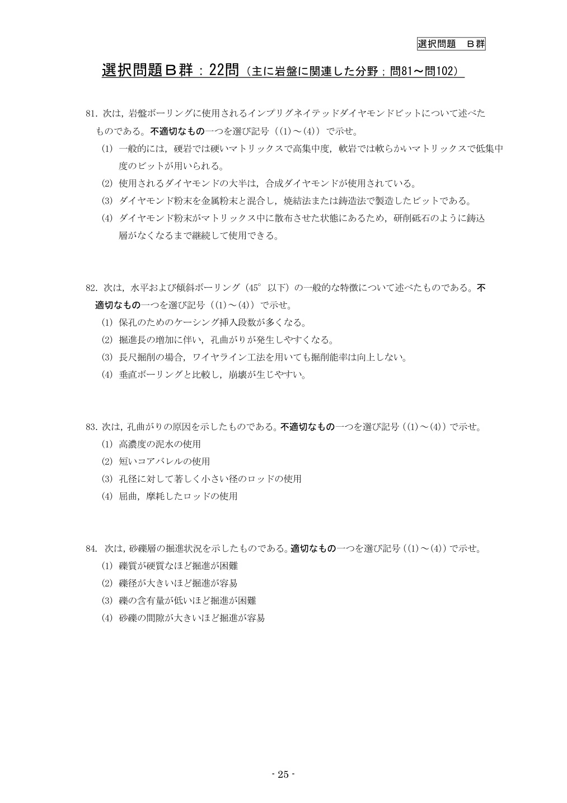
問82
B群（岩盤）
82．次は，水平および傾斜ボーリング（45°以下）の一般的な特徴について述べたものである。不
適切なもの一つを選び記号（(1)～(4)）で示せ。
(1) 保孔のためのケーシング挿入段数が多くなる。
(2) 掘進長の増加に伴い，孔曲がりが発生しやすくなる。
(3) 長尺掘削の場合，ワイヤライン工法を用いても掘削能率は向上しない。
(4) 垂直ボーリングと比較し，崩壊が生じやすい。
図表・イラスト確認用：PDF紙面（26ページ）を表示
問83
B群（岩盤）
83．次は，孔曲がりの原因を示したものである。不適切なもの一つを選び記号（(1)～(4)）で示せ。
(1) 高濃度の泥水の使用
(2) 短いコアバレルの使用
(3) 孔径に対して著しく小さい径のロッドの使用
(4) 屈曲，摩耗したロッドの使用
図表・イラスト確認用：PDF紙面（26ページ）を表示
問84
B群（岩盤）
84. 次は，砂礫層の掘進状況を示したものである。適切なもの一つを選び記号（（1)～(4））で示せ。
(1) 礫質が硬質なほど掘進が困難
(2) 礫径が大きいほど掘進が容易
(3) 礫の含有量が低いほど掘進が困難
(4) 砂礫の間隙が大きいほど掘進が容易
- 26 -
選択問題 Ｂ群
図表・イラスト確認用：PDF紙面（26ページ）を表示
問85
B群（岩盤）
85. 次は，岩盤掘削時等に得られる情報を示したものである。不適切なもの一つを選び記号（（1）
～(4)）で示せ。
(1) 掘進速度，給圧，回転数などの岩の固さ
(2) コア試料を取り出したときの岩種，色調，コア長
(3) 孔内水位，送水量，送水圧および湧水，逸水深度
(4) 標準貫入試験のハンマー自沈の貫入量
図表・イラスト確認用：PDF紙面（27ページ）を表示
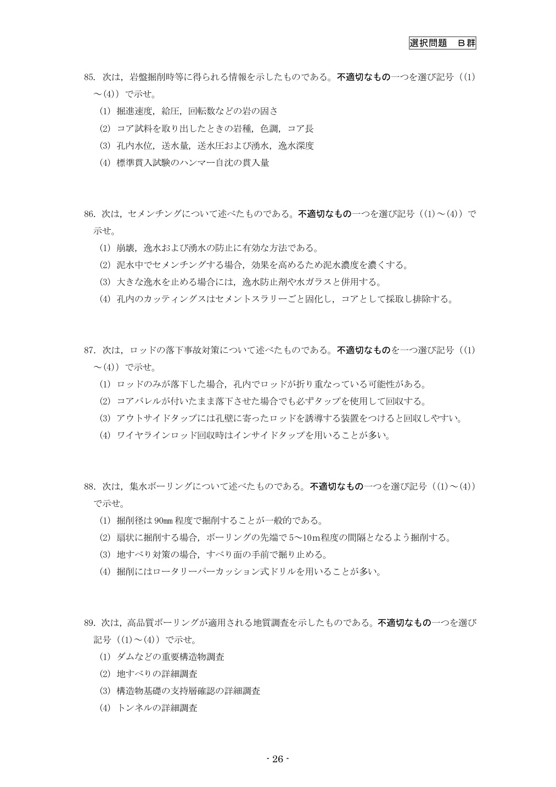
問86
B群（岩盤）
86．次は，セメンチングについて述べたものである。不適切なもの一つを選び記号（(1)～(4)）で
示せ。
(1) 崩壊，逸水および湧水の防止に有効な方法である。
(2）泥水中でセメンチングする場合，効果を高めるため泥水濃度を濃くする。
(3) 大きな逸水を止める場合には，逸水防止剤や水ガラスと併用する。
(4) 孔内のカッティングスはセメントスラリーごと固化し，コアとして採取し排除する。
図表・イラスト確認用：PDF紙面（27ページ）を表示
問87
B群（岩盤）
87．次は，ロッドの落下事故対策について述べたものである。不適切なものを一つ選び記号（(1)
～(4)）で示せ。
(1) ロッドのみが落下した場合，孔内でロッドが折り重なっている可能性がある。
(2) コアバレルが付いたまま落下させた場合でも必ずタップを使用して回収する。
(3) アウトサイドタップには孔壁に寄ったロッドを誘導する装置をつけると回収しやすい。
(4) ワイヤラインロッド回収時はインサイドタップを用いることが多い。
図表・イラスト確認用：PDF紙面（27ページ）を表示
問88
B群（岩盤）
88．次は，集水ボーリングについて述べたものである。不適切なもの一つを選び記号（（1)～(4））
で示せ。
(1) 掘削径は90mm 程度で掘削することが一般的である。
(2) 扇状に掘削する場合，ボーリングの先端で5～10ｍ程度の間隔となるよう掘削する。
(3) 地すべり対策の場合，すべり面の手前で掘り止める。
(4) 掘削にはロータリーパーカッション式ドリルを用いることが多い。
図表・イラスト確認用：PDF紙面（27ページ）を表示
問89
B群（岩盤）
89．次は，高品質ボーリングが適用される地質調査を示したものである。不適切なもの一つを選び
記号（(1)～(4)）で示せ。
(1) ダムなどの重要構造物調査
(2) 地すべりの詳細調査
(3) 構造物基礎の支持層確認の詳細調査
(4) トンネルの詳細調査
- 27 -
選択問題 Ｂ群
図表・イラスト確認用：PDF紙面（27ページ）を表示
問90
B群（岩盤）
90．次は，岩盤のシュミット式ハンマー試験(JGS 3411-2012)について述べたものである。適切な
もの一つを選び記号（(1)～(4)）で示せ。
(1) 中硬岩のみを対象とする。
(2) 静的貫入によるハンマーの抵抗値を測定する。
(3) 測定する面は，試験対象とする岩盤の露出面で，平面上の領域とする。
(4) 測定点は，測定面内に5 点以上設定する。
図表・イラスト確認用：PDF紙面（28ページ）を表示
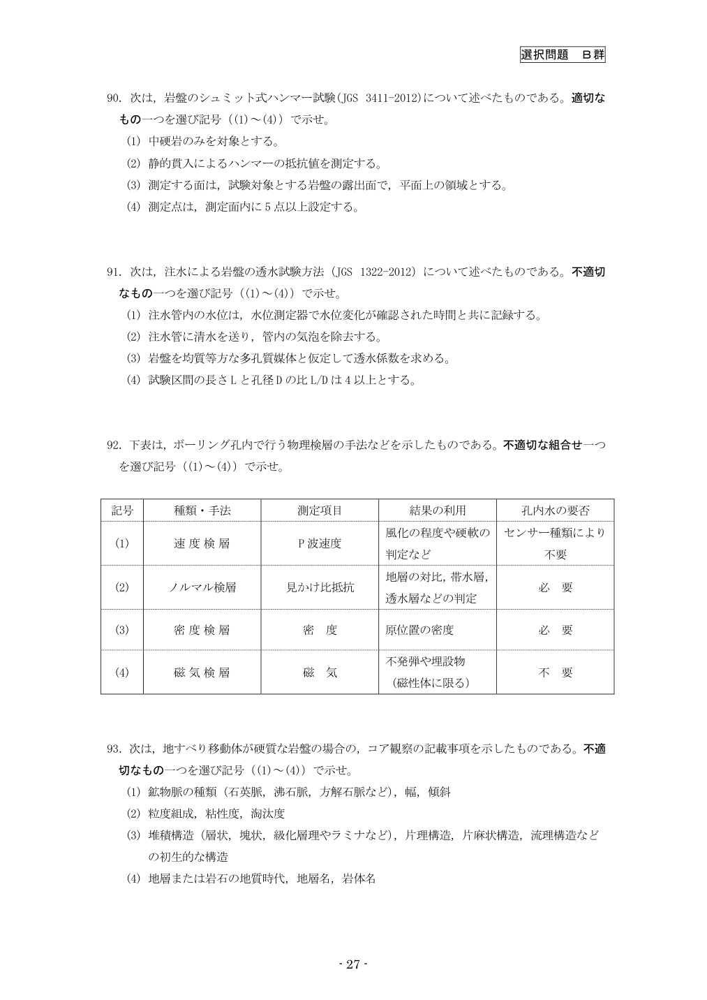
問91
B群（岩盤）
91．次は，注水による岩盤の透水試験方法（JGS 1322-2012）について述べたものである。不適切
なもの一つを選び記号（(1)～(4)）で示せ。
(1) 注水管内の水位は，水位測定器で水位変化が確認された時間と共に記録する。
(2) 注水管に清水を送り，管内の気泡を除去する。
(3) 岩盤を均質等方な多孔質媒体と仮定して透水係数を求める。
(4) 試験区間の長さL と孔径D の比L/D は4 以上とする。
図表・イラスト確認用：PDF紙面（28ページ）を表示
問92
B群（岩盤）
92．下表は，ボーリング孔内で行う物理検層の手法などを示したものである。不適切な組合せ一つ
を選び記号（(1)～(4)）で示せ。
記号
種類・手法
測定項目
結果の利用
孔内水の要否
(1)
速度検層
P 波速度
風化の程度や硬軟の
判定など
センサー種類により
不要
(2)
ノルマル検層
見かけ比抵抗
地層の対比，帯水層，
透水層などの判定
必 要
(3)
密度検層
密 度
原位置の密度
必 要
(4)
磁気検層
磁 気
不発弾や埋設物
（磁性体に限る）
不 要
図表・イラスト確認用：PDF紙面（28ページ）を表示
問93
B群（岩盤）
93．次は，地すべり移動体が硬質な岩盤の場合の，コア観察の記載事項を示したものである。不適
切なもの一つを選び記号（(1)～(4)）で示せ。
(1) 鉱物脈の種類（石英脈，沸石脈，方解石脈など），幅，傾斜
(2) 粒度組成，粘性度，淘汰度
(3) 堆積構造（層状，塊状，級化層理やラミナなど），片理構造，片麻状構造，流理構造など
の初生的な構造
(4) 地層または岩石の地質時代，地層名，岩体名
- 28 -
選択問題 Ｂ群
図表・イラスト確認用：PDF紙面（28ページ）を表示
問94
B群（岩盤）
94．下表は，工学的地質区分名（模様）の岩種区分の組合せを示したものである。不適切なもの一
つを選び記号（(1)～(4)）で示せ。
記号
模 様
岩 種
文字記号
(1)
砂
岩
Ss
(2)
石灰岩
Ls
(3)
玄武岩
Ba
(4)
黒色片岩
Bsct
図表・イラスト確認用：PDF紙面（29ページ）を表示
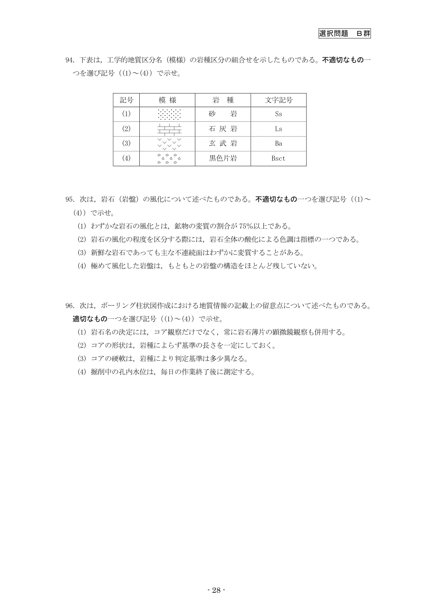
問95
B群（岩盤）
95．次は，岩石（岩盤）の風化について述べたものである。不適切なもの一つを選び記号（(1)～
(4)）で示せ。
(1) わずかな岩石の風化とは，鉱物の変質の割合が75％以上である。
(2) 岩石の風化の程度を区分する際には，岩石全体の酸化による色調は指標の一つである。
(3) 新鮮な岩石であっても主な不連続面はわずかに変質することがある。
(4) 極めて風化した岩盤は，もともとの岩盤の構造をほとんど残していない。
図表・イラスト確認用：PDF紙面（29ページ）を表示
問96
B群（岩盤）
96．次は，ボーリング柱状図作成における地質情報の記載上の留意点について述べたものである。
適切なもの一つを選び記号（(1)～(4)）で示せ。
(1) 岩石名の決定には，コア観察だけでなく，常に岩石薄片の顕微鏡観察も併用する。
(2) コアの形状は，岩種によらず基準の長さを一定にしておく。
(3) コアの硬軟は，岩種により判定基準は多少異なる。
(4) 掘削中の孔内水位は，毎日の作業終了後に測定する。
- 29 -
・
・
・
・
・
・
・
・
・
・
・
・
・
・
・
・
・
・
・
・
・
・
・
・
・
・
・
・
・
・
・
・
・
2 2
8
0
10
18
6
12
0 2 0
選択問題 Ｂ群
図表・イラスト確認用：PDF紙面（29ページ）を表示
問97
B群（岩盤）
97．下図は，あるボーリングにおけるコア採取状況を示したものである。このコアのRQD およびそ
の評価の適切な組合せ一つを選び記号（(1)～(4)）で示せ。
コア片の長さ（cm）
（掘進長100cm）
図表・イラスト確認用：PDF紙面（30ページ）を表示
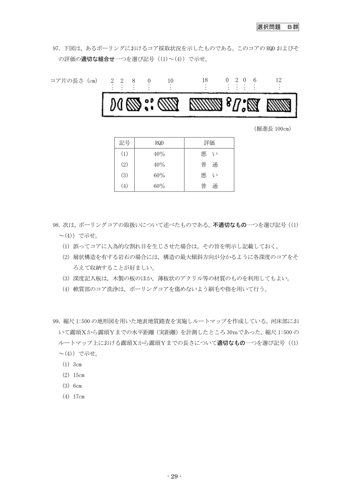
問98
B群（岩盤）
98．次は，ボーリングコアの取扱いについて述べたものである。不適切なもの一つを選び記号（(1)
～(4)）で示せ。
(1) 誤ってコアに人為的な割れ目を生じさせた場合は，その旨を明示し記載しておく。
(2) 層状構造を有する岩石の場合には，構造の最大傾斜方向が分かるように各深度のコアをそ
ろえて収納することが好ましい。
(3) 深度記入板は，木製の板のほか，薄板状のアクリル等の材質のものを利用してもよい。
(4) 軟質部のコア洗浄は，ボーリングコアを傷めないよう刷毛や指を用いて行う。
図表・イラスト確認用：PDF紙面（30ページ）を表示
問99
B群（岩盤）
99．縮尺1:500 の地形図を用いた地表地質踏査を実施しルートマップを作成している。河床部にお
いて露頭Ｘから露頭Ｙまでの水平距離（実距離）を計測したところ30ｍであった。縮尺1:500 の
ルートマップ上における露頭Ｘから露頭Ｙまでの長さについて適切なもの一つを選び記号（(1)
～(4)）で示せ。
(1) 3cm
(2) 15cm
(3) 6cm
(4) 17cm
記号
RQD
評価
(1)
40％
悪 い
(2)
40％
普 通
(3)
60％
悪 い
(4)
60％
普 通
- 30 -
選択問題 Ｂ群
図表・イラスト確認用：PDF紙面（30ページ）を表示
問100
B群（岩盤）
100．下図は，Ａ川河床部のＸ・Ｙ・Ｚのそれぞれの露頭で確認された地質境界面の走向傾斜にも
とづき，平面図上の左右岸山腹での地質境界位置を推定したものである。
露頭Ｘ・Ｙ・Ｚで確認された地質境界面の走向傾斜として適切なもの一つを選び記号（(1)～
(4)）で示せ。
記号
Ｘ露頭
Ｙ露頭
Ｚ露頭
走向
傾斜
走向
傾斜
走向
傾斜
(1)
北西45°
60°南西
北東60°
60°南
北東45°
45°南東
(2)
北西45°
60°北東
北東60°
60°北
北東45°
45°北西
(3)
北西45°
60°北東
北東60°
60°南
北東45°
45°北西
(4)
北西45°
60°南西
北東60°
60°北
北東45°
45°南東
- 31 -
選択問題 Ｂ群
図表・イラスト確認用：PDF紙面（31ページ）を表示
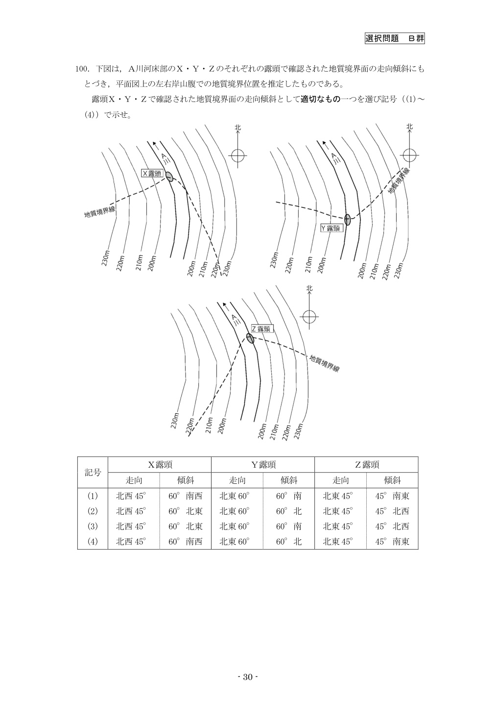
問101
B群（岩盤）
101. 次は，岩盤ボーリングにおける作業内容について述べたものである。不適切なもの一つを選
び記号（(1)～(4)）で示せ。
(1) コア採取率を上げるため，送水掘進を控え，無水掘進で採取した。
(2) コアが長かったため，コアカッターで丁寧に切断してコア箱に収めた。
(3) 試料を再採取して砂状になったため，カッティングスであることを示してコア箱に収めた。
(4) コアを収める際に割れてしまったので，その内容を日報に記載した。
図表・イラスト確認用：PDF紙面（32ページ）を表示
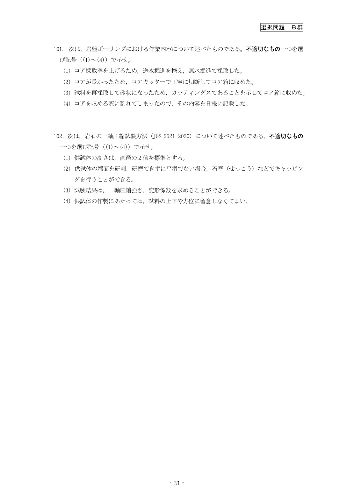
問102
B群（岩盤）
102．次は，岩石の一軸圧縮試験方法（JGS 2521-2020）について述べたものである。不適切なもの
一つを選び記号（(1)～(4)）で示せ。
(1) 供試体の高さは，直径の2 倍を標準とする。
(2) 供試体の端面を研削，研磨できずに平滑でない場合，石膏（せっこう）などでキャッピン
グを行うことができる。
(3) 試験結果は，一軸圧縮強さ，変形係数を求めることができる。
(4) 供試体の作製にあたっては，試料の上下や方位に留意しなくてよい。
- 32 -
必須問題
Ⅶ．記述式問題 (2問)
以下の問いに対する解答を答案用紙（その２）に記述せよ。
第１問
ボーリング調査現場では，作業が常に安全に行われているか，不安定行動はないかなど，毎日始
業前に，KY 活動（リスクアセスメント活動）が行われている。
KY 活動ではKY 日報（リスクアセスメント活動記録）が用いられており，「危険のポイント」と，
それに対する「災害防止対策（私たちはこうする）」が記されている。
そこで，次の選択番号①～⑤に示した「危険のポイント」より2 つを選び，答案用紙の所定の欄
にそれぞれ「災害防止対策（私たちはこうする）」を2 つ記述せよ。
選択番号
危険のポイント
①
ロッドホルダーが滑り，ホイスチングスイベルとホルダーの間に手，指が挟まれる。
②
手，指を機材に挟まれる。
③
三又，仮設足場から墜落，転倒する。
④
機械の回転部に手，指，足が巻き込まれる。
⑤
ハンマーとアンビルに手，指，足が挟まれる。
- 33 -
必須問題
第２問
調査ボーリングに求められる代表的な品質項目について，その概要を下表にまとめた。
表中の空欄 Ａ ～ Ｆ に当てはまる語句を，次の【語群】からそれぞれ１つを選び記述
せよ。なお，語句にはいずれにも該当しないものも含まれている。
【調査ボーリングに求められる代表的な品質項目】
項目
品質項目
その概要
（1）
Ａ
Ａ が求められる場合には，調査結果もそれを前提に解釈する。特に計
器測定設置目的のボーリングでは，物理的にも Ａ が高い精度で要求さ
れる。
（2）
Ｂ
孔内検層などでは測定プローブと孔壁の密着性が精度にも大きく影響する
ので， Ｂ の確保は重要である。
（3）
Ｃ
プレシャーメータ試験など，孔内試験を孔壁で実施する場合には，特に
Ｂ や鉛直性と孔壁を乱さないことが必要で，コアチューブによる掘削時や
コアチューブ昇降時に衝撃を与えない丁寧な掘削が要求される。
（4）
Ｄ
サンプリングおよび透水試験など，孔内試験を孔底で実施する場合には，
孔底にカッティングスが沈殿しないよう，かつ孔底に衝撃を与えない掘削
が要求される。
（5）
Ｅ
透水試験や地下水の流動特性に関わる孔内試験を実施する場合には，孔壁
の地下水流動性を損なわないような配慮が要求される。
（6）
Ｆ
試料のサンプリング深度，各種試験の実施深度の管理は，調査結果に大き
く影響を与えることとなる。正確な深度の記録が要求される。
【語群】
深度管理，機械性能，孔壁の乱れ，水平方向，直進性，孔壁や孔底の透水性，
掘削方向，ボーリング技術者の技量と配慮，孔径の一定性，地質土質，
孔底へのカッティングスの沈殿や乱れ，平面配置，工程管理